17 PLN e Responsabilidade Social
Aplicações da FrameNet-Br
17.1 Introdução
Este capítulo apresenta um panorama da aplicação da Semântica de Frames e da infraestrutura computacional da FrameNet Brasil em tarefas de Processamento de Linguagem Natural (PLN) voltadas à construção de sentido em aplicações práticas, como no enfrentamento à violência de gênero e na acessibilidade cultural. No Capítulo Semântica com técnicas simbólicas, as autoras discutem métodos simbólicos voltados ao processamento e à compreensão de textos em linguagem natural, apresentando três modelos como exemplos de bases de conhecimento semântico: a FrameNet (Ruppenhofer et al., 2016), a WordNet (Fellbaum, 1998) e a ConceptNet (Speer et al., 2017). A FrameNet e a WordNet, bem como suas versões em português, são classificadas como recursos léxico-semânticos, enquanto a ConceptNet é caracterizada como uma base de conhecimento de senso comum. Naquele capítulo, as principais referências teóricas e os conceitos fundamentais dessas abordagens são detalhados e contextualizados, oferecendo um suporte conceitual para as aplicações que apresentamos aqui. Assim, ao longo da Seção Semântica de Frames, retomaremos e aprofundaremos aspectos do modelo FrameNet Brasil introduzidos anteriormente, além de inserir novos conceitos necessários para sustentar as aplicações descritas.
Partindo da teoria desenvolvida por Fillmore (1982) e da FrameNet como sua aplicação computacional, discutimos como os frames e suas relações semânticas estruturam a compreensão linguística e servem de base para a anotação e o processamento de dados em português brasileiro. A tarefa de PLN que orienta este capítulo é a anotação semântica baseada em frames, aplicada a diferentes domínios e modalidades comunicativas. Trata-se de uma tarefa central para o desenvolvimento de modelos computacionais capazes de operar sobre dados reais em contextos sensíveis como a saúde pública e a acessibilidade audiovisual.
O capítulo busca mostrar como demandas sociais do dia a dia podem ser objetos de aplicações computacionais ao envolverem desde a identificação de padrões de violência de gênero em registros de saúde até a avaliação de traduções intersemióticas em produtos audiovisuais. A primeira parte do texto apresenta os fundamentos teóricos da Semântica de Frames, detalhando o funcionamento da FrameNet Brasil e seus refinamentos semânticos, como as Relações Qualia Ternárias1 que se dão por meio da ferramenta de anotação Webtool. Em seguida, são discutidos dois estudos de caso que ilustram o potencial da anotação semântica para enfrentar problemas reais.
O primeiro estudo está relacionado ao projeto DataToStopGBV, voltado à identificação de casos de violência baseada em gênero a partir de registros do sistema público de saúde. Por meio da modelagem de domínios específicos (saúde e violência), da modelagem de frames e da anotação manual e automática dos dados, o projeto mostra como a estrutura semântica da FrameNet pode ser empregada para apoiar políticas públicas de prevenção à violência.
O segundo estudo apresenta o dataset Audition, um recurso multimodal anotado semanticamente com o objetivo de apoiar a geração e a avaliação de traduções audiovisuais acessíveis, como a audiodescrição. A partir da articulação entre modos comunicativos, como áudio original, vídeo e audiodescrição, o Audition permite análises de similaridade semântica e contribui para o avanço de tecnologias assistivas baseadas em teoria linguística.
Apesar de compartilharem a mesma base teórica e metodológica – a Semântica de Frames e a FrameNet Brasil –, os dois estudos de caso exploram abordagens de anotação semântica distintas: enquanto o projeto DataToStopGBV faz uso de anotações semânticas automáticas, com apoio de modelos supervisionados, o dataset Audition foi construído com anotação manual especializada sobre os dados multimodais. Essa diferença reflete tanto os objetivos como as particularidades de cada tarefa.
Ao integrar teoria linguística, recursos computacionais e compromisso social, o capítulo demonstra como a Semântica de Frames pode orientar o desenvolvimento de ferramentas e metodologias eficazes para o processamento semântico em português brasileiro, com aplicações relevantes na saúde pública e na acessibilidade cultural.
17.2 Semântica de Frames
Como apresentado no Capítulo E o significado?, a Semântica ocupa-se do estudo do significado expresso por palavras, expressões e enunciados. Dentro desse campo, a Semântica de Frames, também discutida na Subseção FrameNet, é uma teoria desenvolvida por Charles J. Fillmore (Fillmore, 1982), que propõe uma maneira particular de se entender o significado lexical. Segundo essa abordagem, compreender o sentido de um item lexical envolve mais do que conhecer sua definição no dicionário: é necessário também ativar um conjunto de conhecimentos socialmente compartilhados sobre o mundo e sobre as situações em que ele costuma ser usado. Esse conjunto é chamado, na teoria, de frame.
Na definição de Fillmore (1982, p. 111), um frame é “qualquer sistema de conceitos relacionados de tal maneira que, para entender qualquer um deles, é preciso entender toda a estrutura na qual ele se insere”2. Em outras palavras, para o autor, o significado de uma palavra está associado a uma rede de conceitos interligados, que funciona como uma espécie de pano de fundo conceitual para a construção de sentido. Essa rede de conceitos, os frames, está ancorada na forma como experienciamos e categorizamos o mundo ao nosso redor e possibilita a atribuição de significado no momento da comunicação.
Ao ouvir uma palavra como “medicar”, por exemplo, não pensamos apenas na ação de administrar um remédio mas também em tudo que geralmente a acompanha: há um profissional de saúde, um medicamento, uma condição a ser tratada. O interessante é que, mesmo quando esses elementos não aparecem explicitamente na frase, eles ainda são mobilizados para a sua compreensão. Se alguém diz “O plantonista medicou a criança”, por exemplo, já se pressupõe que a criança estava com algum sintoma ou doença, que foi administrada uma substância com fins terapêuticos e que esse ato se deu num contexto de cuidado em saúde.
Isso acontece porque vivemos em uma sociedade em que as práticas de atenção à saúde são parte do cotidiano, ou seja, esse tipo de situação bem como os participantes e as circunstâncias que a compõem integram nosso repertório sociocultural. Assim sendo, quando o verbo “medicar” é usado, ele ativa uma rede de conhecimentos compartilhados, isto é, o frame que permite tal entendimento. Na Semântica de Frames, diz-se que o verbo “medicar” é uma Unidade Lexical que evoca um frame do cenário da saúde.
Ao destacar os conhecimentos compartilhados que sustentam o significado das palavras, a Semântica de Frames amplia a visão tradicional sobre a compreensão linguística. Em vez de analisar apenas sentenças isoladas, essa abordagem valoriza o papel da experiência humana e do contexto cultural para explicar como usamos e entendemos a linguagem no cotidiano. Por isso, Fillmore (1985) caracteriza essa teoria como uma semântica da compreensão, em contraste com a semântica das condições de verdade, que se concentra em avaliar se uma sentença é verdadeira ou falsa com base na realidade. Para ele, a linguagem não é simplesmente um espelho do mundo, mas uma ferramenta por meio da qual construímos e negociamos sentidos, ancorados na cognição e nas práticas culturais. Por isso, de modo geral, a teoria propõe uma pergunta central: como as pessoas organizam sua experiência por meio da linguagem? Para respondê-la, os estudos em Semântica de Frames analisam como as Unidades Lexicais são utilizadas em contextos autênticos e quais frames são acionados nesses usos.
Desde 1997, essa abordagem tem fundamentado a construção da FrameNet3 (Fillmore et al., 2003), projeto de lexicografia computacional que descreve o léxico com base nos frames evocados pelas ULs em ocorrências reais extraídas de corpora. Fundada por Charles J. Fillmore em 1997, no International Computer Science Institute (ICSI), localizado em Berkeley, Califórnia, a iniciativa se apoia na Semântica de Frames (Fillmore, 1982; Fillmore, 1985) e tem como objetivo investigar como os sentidos são construídos nas línguas naturais. O projeto tem como foco o desenvolvimento de um banco de dados lexical capaz de descrever a língua inglesa sob uma perspectiva semântica e sintática, utilizando exemplos reais extraídos de corpora. Como desdobramento desse trabalho, Fillmore também contribuiu para a proposição do Constructicon4, recurso voltado à descrição de construções gramaticais que evocam frames, e que busca representar a integração entre forma e sentido em estruturas mais complexas e idiomáticas.
Com o tempo, os recursos criados pela FrameNet começaram a ser adotados em diferentes áreas, incluindo o avanço de aplicações em linguística computacional, especialmente em tarefas de PLN, e o projeto foi expandido para outras línguas. Um dos principais exemplos dessa expansão é a FrameNet Brasil (FN-Br), um laboratório de linguística computacional vinculado à Universidade Federal de Juiz de Fora (UFJF), em Minas Gerais. O projeto brasileiro desenvolve anotações semânticas para o português brasileiro e também propõe extensões à base de frames e à estrutura de dados originalmente concebidas pela Berkeley FrameNet.
17.3 FrameNet Brasil
Para compreender a metodologia de anotação utilizada pela FN-Br, é fundamental conhecer as nomenclaturas essenciais ao projeto. Algumas foram apresentadas na Subseção FrameNet e outras serão detalhadas ao longo desta seção. A primeira delas é o ponto de partida de toda anotação, a Unidade Lexical (UL), que corresponde à associação de um lema ao frame evocado por ele. Na FN-Br, o lema “medicar.v” está associado ao frame Intervenção_em_saúde5, apresentado na Figura 17.1.
Intervenção_em_saúde
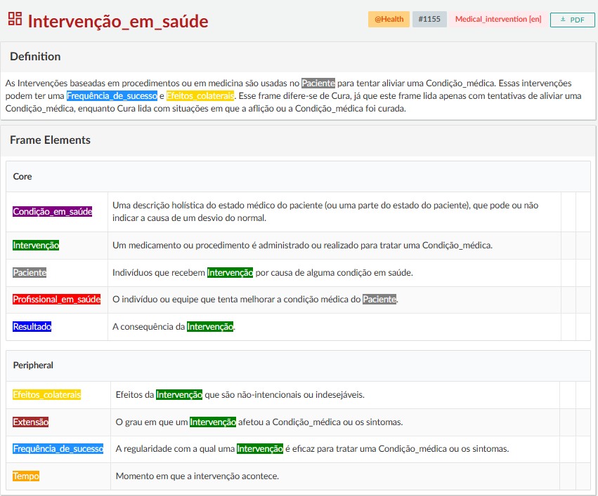
Fonte: Webtool 4.1
Na Figura 17.1, é possível visualizar a estrutura básica de um frame na interface gráfica da FrameNet Brasil, a Webtool6 (Torrent et al., 2024), plataforma responsável pelo gerenciamento do banco de dados da FN-Br. Na ferramenta, os anotadores têm acesso aos frames e às ULs do banco de dados e podem interagir com esses elementos diretamente na interface, o que facilita a análise e a anotação.
No topo da página de cada entrada, é exibido o nome do frame, seguido por uma breve definição que o caracteriza. No caso do frame Intervenção_em_saúde, por exemplo, trata-se de um evento em que um profissional da área da saúde realiza uma intervenção médica, como administrar um medicamento, com o objetivo de tratar ou aliviar uma condição ou doença. Logo abaixo da definição, são apresentados os participantes, os instrumentos ou as circunstâncias que compõem a cena representada pelo frame, denominados de Elementos de Frame (EFs). Na FrameNet, os EFs são divididos em dois grupos: os nucleares, que são essenciais para a composição do frame, e os não nucleares, que desempenham funções circunstanciais.
No frame Intervenção_em_saúde, são apresentados como EFs nucleares o Profissional_em_saúde7, que realiza os procedimentos, o Paciente, que sofre a condição ou doença, a Condição_em_saúde, que motiva a intervenção, a própria Intervenção e o Resultado obtido. Os outros elementos que aparecem na Figura 17.1, como Efeitos_colaterais e Tempo, são considerados não nucleares.
Para realizar a anotação de texto corrido8 – modelo de anotação mais seguido atualmente na FN-Br –, os anotadores do projeto recebem lotes de sentenças para análise. Conforme a metodologia descrita por Ruppenhofer et al. (2016), que fundamenta o modelo adotado pela FrameNet, a tarefa central nesse tipo de anotação é identificar, em cada sentença, as ULs e os frames que elas evocam. Na anotação, ao selecionar uma UL na interface, são exibidos os frames associados a ela na base de dados. O anotador, então, lê as descrições desses frames para escolher o mais adequado ao contexto da sentença e, a partir dessa escolha, o sistema gera uma camada para marcar os Elementos de Frame (EFs), que devem ser destacados manualmente no texto.
Durante o processo de anotação, pode acontecer de EFs nucleares não serem instanciados explicitamente como material linguístico nos enunciados em análise. Quando isso acontece, dizemos que houve uma instanciação nula. Na FrameNet, esse fenômeno é dividido em três tipos: Instanciação Nula Definida (DNI, do inglês Definite Null Instantiation), Instanciação Nula Indefinida (INI, do inglês Indefinite Null Instantiation) e Instanciação Nula Construcional (CNI, do inglês Constructional Null Instantiation).
A primeira delas, a DNI, diz respeito à omissão de um EF que pode ser recuperado com base no contexto. Na sentença do Exemplo 17.19, por exemplo, o verbo “observar” está anotado no frame Percepção_ativa, que tem dois EFs nucleares: o Perceptor_agentivo, que é aquele que realiza a ação de observar, e o Fenômeno, que é aquilo que é percebido.
Exemplo 17.1
Um cachorro observaPERCEPÇÃO_ATIVA de longe.
Exemplo 17.2
As pessoas descem.
A sentença do Exemplo 17.1, no entanto, expressa apenas o Perceptor_agentivo (“um cachorro”) enquanto o Fenômeno está ausente. Como aquilo que é observado (“as pessoas”) pode ser facilmente recuperado pelo contexto discursivo – mais especificamente pela sentença do Exemplo 17.2, que ocorre logo antes no corpus –, essa omissão é classificada como DNI.
Já a INI ocorre quando um EF nuclear não está explicitamente expresso na sentença nem pode ser determinado com base no contexto imediato. Isso faz com que o elemento ausente seja interpretado de maneira genérica ou indefinida. Na sentença do Exemplo 17.3, por exemplo, o frame Pessoas_por_idade é evocado pela UL “crianças.n”10, e um de seus EFs nucleares é a Idade, que, nesse caso, não está lexicalmente realizado nem pode ser inferido com precisão a partir do contexto. No entanto, como o frame é formado por ULs que já pressupõem uma faixa etária aproximada, a ausência do EF Idade pode ser considerada INI e DNI. Isso demonstra que, em certos casos, há sobreposição entre os dois tipos de instanciação nula, exigindo decisões interpretativas do anotador.
Exemplo 17.3
As criançasPESSOAS_POR_IDADE se reúnem ao redor do globo.
A Instanciação Nula Construcional (CNI), por sua vez, ocorre quando a própria estrutura da língua licencia a omissão de um EF nuclear. No português brasileiro, isso acontece, por exemplo, nas sentenças com sujeito desinencial ou nas construções imperativas. É o caso da sentença do Exemplo 17.4, em que, por se tratar de uma oração com sujeito desinencial, a expressão do agente não é obrigatória no português. Nesse caso, o verbo “brincar” evoca o frame Atividade, cujo único EF nuclear é o Agente, ou seja, aquele que realiza a ação. No exemplo, no entanto, o Agente da ação está lexicalmente omitido pela estrutura. Por isso, essa omissão é classificada como uma ocorrência de CNI.
Exemplo 17.4
BrincamATIVIDADE de lançar as bolinhas dentro da lata.
Existem casos, ainda, em que a própria UL que evoca o frame já inclui um dos EFs em seu radical, caracterizando a ocorrência de Incorporação (INC). Na sentença do Exemplo 17.5, por exemplo, o lema “elefante” está associado ao frame Animais, cujo EF nuclear é o próprio animal referido. Nesse caso, não há um termo separado na sentença que realize esse EF, pois ele já está presente na própria UL “elefante.n”, configurando assim uma INC (do inglês, incorporation).
Exemplo 17.5
O elefanteANIMAIS azul.
Essa questão da ausência linguística ganha novos contornos quando se consideram dados multimodais, como imagens e vídeos. Em contextos audiovisuais, elementos que parecem ausentes no texto verbal muitas vezes estão presentes na imagem, o que desafia os limites da anotação textual tradicional. Estudos realizados em nosso laboratório, como o de Belcavello (2023), demonstraram que objetos visuais também são capazes de evocar frames ou complementar o que foi evocado pela narração. Diante disso, tornou-se necessário desenvolver um tipo específico de anotação que integrasse essas diferentes modalidades semióticas. Essa anotação multimodal será abordada na última seção deste capítulo, em que se destaca sua importância para ampliar a representação semântica na FrameNet Brasil e, inclusive, repensar o escopo das instanciações nulas.
Considerando a estrutura interna dos frames e de seus elementos apresentada até aqui, a FrameNet Brasil categoriza os frames em cinco grandes grupos, definidos a partir da natureza do conteúdo semântico que representam (Torrent et al., 2022). No Lutma11, recurso de criação de frames da FrameNet Brasil para não especialistas, eles são definidos da seguinte forma:
Entidade: um conceito, uma coisa, um ser vivo.
Evento: envolve pelo menos um participante e ocorre em um local e hora.
Estado: uma situação estável.
Relação: uma relação entre duas ou mais entidades, eventos ou estados.
Atributo: um atributo com um valor é aplicado a uma entidade.
Na prática, esses grupos podem ser ilustrados com exemplos concretos presentes na própria base da FN-Br. O grupo Entidade, por exemplo, inclui o frame Pessoas, que é evocado por ULs gerais para indivíduos (como “povo.n” e “gente.n”). O grupo Evento pode ser representado por Fazer_exame_em_Saúde, que diz respeito ao ato de realizar um exame médico e é evocado por ULs como “aferir.v” e “coletar.v”. Já o grupo Estado é exemplificado por Condições_em_Saúde, formado por ULs como “diabético.a” e “cardiopata.a”. O grupo Relação, por sua vez, inclui frames como Parentesco, que reúne ULs que expressam relações familiares (como “irmão.n” e “mãe.n”), enquanto o grupo Atributo pode ser exemplificado com o frame Cor, que associa características como “azul.a” e “acinzentado.a” a uma entidade.
Além de contribuir para a sistematização da base de dados da FrameNet Brasil, essa divisão também facilita a compreensão do conteúdo e do uso de cada frame, antecipando o tipo de estrutura conceitual que será encontrada. Porém, para entender como os frames se conectam e formam uma rede, é preciso olhar para as relações entre os frames, que serão discutidas a seguir.
17.3.1 As relações frame-a-frame
Na FrameNet, cada frame faz parte de uma grande rede de significados. Isso quer dizer que, ao modelar um novo frame, é possível conectá-lo a outros já existentes, formando um sistema interligado. Essas conexões são chamadas de relações frame-a-frame e são fundamentais para mostrar como eles se organizam e se relacionam na rede.
As principais categorias dessas relações são: Herança, Subframe, Uso, Precedência, Causativo_de, Incoativo_de e Perspectiva. Cada uma delas indica um tipo específico de ligação entre os frames – como quando um frame mais geral se conecta a um mais específico, por exemplo, ou quando dois frames representam diferentes pontos de vista de uma mesma situação. Na FrameNet Brasil, essas relações podem ser visualizadas por meio do Grapher, uma ferramenta gráfica disponível na WebTool. No Grapher, cada tipo de relação aparece com uma cor diferente, facilitando a identificação e o estudo dessas conexões. A Figura 17.2, por exemplo, ajuda a visualizar como o frame Intervenção_em_saúde se conecta a outros na base.
Intervenção_em_saúde
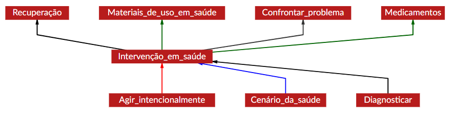
Fonte: Webtool 4.1
A relação de Herança (Inheritance), representada pela seta vermelha, indica quando um frame filho herda as características de um frame mãe, elaborando um ou mais de seus EFs. Um exemplo disso é Intervenção_em_saúde, que herda as características de Agir_intencionalmente (veja Figura 17.3).
Agir_intencionalmente
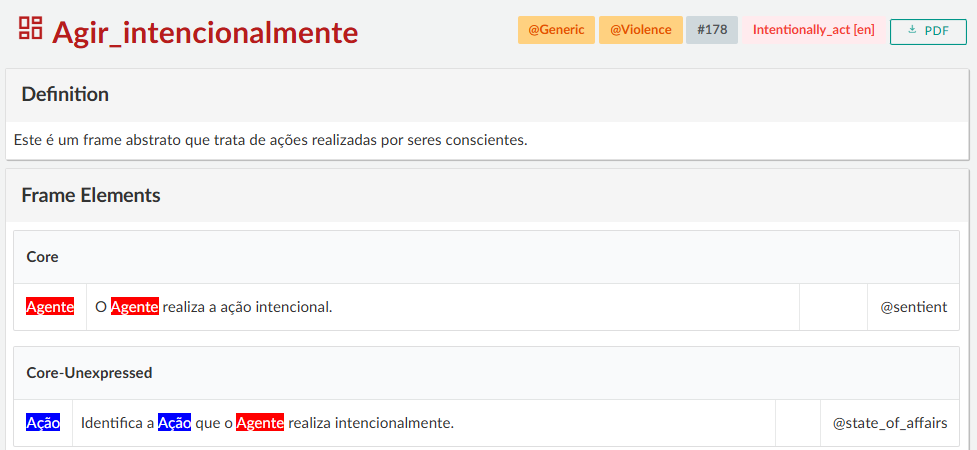
Fonte: Webtool 4.1
Acerca disso, em Agir_intencionalmente, o EF Pessoa é definido de forma genérica, como qualquer indivíduo que realiza uma ação. Já no frame Intervenção_em_saúde, esse papel é especificado: o agente da ação passa a ser o Profissional_em_Saúde, caracterizado como alguém que atua com a intenção de melhorar a condição clínica de um paciente. A mesma situação se dá com outros elementos herdados: o que antes era simplesmente a Ação, por exemplo, passa a ser identificada como a Intervenção realizada. Essa especificação ajuda a representar de forma mais detalhada o tipo de situação descrita pelo novo frame.
A relação de Subframe (Subframe), indicada pela seta azul, conecta um frame que codifica um evento complexo a outros que representam subeventos delimitáveis (ou seja, partes) desse evento. É o caso de Cenário_da_saúde, que representa situações em que um paciente precisa de cuidados médicos. Na FrameNet Brasil, esse cenário está relacionado, por meio da relação de Subframe, a frames como Diagnosticar, Intervenção_em_saúde e Recuperação, que descrevem, respectivamente, as etapas de diagnóstico, realização da intervenção e recuperação do paciente, momentos específicos desse cenário.
Os frames Diagnosticar, Intervenção_em_saúde e Recuperação se articulam também por meio da relação de Precedência (Precedes), indicada pelas setas pretas na Figura 17.2, que organiza os eventos em uma sequência temporal. No caso, Diagnosticar ocorre antes da intervenção, que é seguida pela Recuperação, formando assim uma ordem cronológica que reflete o processo dos cuidados médicos ao longo do tempo.
Por sua vez, a relação de Uso (Using), indicada pelas setas verdes, ocorre quando a compreensão de um frame depende de outro que funciona como seu contexto de fundo. É o caso de Medicamentos e Materiais_de_uso_em_saúde, por exemplo, que pressupõem a cena da Intervenção_em_saúde para serem plenamente compreendidos, visto que tanto os medicamentos quanto os materiais são utilizados no contexto de uma ação médica. Assim, Intervenção_em_saúde fornece o cenário necessário para interpretar o uso desses elementos, dando sentido às práticas que envolvem seu manuseio ou aplicação.
As relações Causativo_de (Causative_of), Incoativo_de (Inchoative_of) e Perspectiva (Perspective_on), por outro lado, não podem ser demonstradas a partir do frame Intervenção_em_saúde. Por isso, para exemplificá-las, é necessário recorrer a outros frames.
A relação Causativo_de, representada por uma seta amarela no Grapher, indica um vínculo de causalidade entre dois frames. Por exemplo, na FN-Br, o frame Causar_condição_em_saúde, que indica a ação de causar (intencionalmente ou não) uma condição em saúde, é causativo do frame Condições_em_saúde, que reúne ULs relacionadas a doenças ou condições que um paciente apresenta.
Já a relação Incoativo_de, representada por uma seta marrom, marca uma mudança de estado. O frame Condições_em_saúde, por exemplo, tem como incoativo o frame Tornar-se_paciente_em_saúde, que descreve a transição de um indivíduo, a partir de um diagnóstico, para a condição de estar doente.
A relação de Perspectiva, por fim, acontece quando diferentes frames representam a mesma situação sob pontos de vista distintos. Ela pode ser exemplificada a partir do frame Emoções, que descreve um experienciador em determinado estado emocional, geralmente provocado por algum estímulo. A partir dele, surgem duas perspectivas distintas: Foco_no_estímulo, que enfatiza o estímulo responsável por causar a emoção, e Emoção_com_foco_no_experienciador, que destaca o ponto de vista de quem sente a emoção em relação ao que a provocou.
As relações frame-a-frame ajudam a entender como os frames se organizam e se ligam dentro da rede semântica da FrameNet Brasil, mostrando diferentes formas de associação entre eles. No entanto, nem todas as conexões importantes acontecem nesse nível. Em muitos casos, é preciso observar ligações mais específicas.
Nesse sentido, para ampliar o refinamento semântico da base, a FrameNet Brasil incluiu novos tipos de relações. Um exemplo é a relação EF-frame (FE-to-frame), que modela o fato de que um EF, em determinado frame, pode estar conceitualmente associado a outro frame na rede. Em outras palavras, essa relação expressa que certos EFs, ao serem instanciados por ULs, tendem a evocar outros frames. Assim, se Intervenção_em_saúde inclui o EF Paciente, como vimos, a relação EF-frame pode indicar que esse Paciente frequentemente remete ao frame Pessoa, já que, em geral, os pacientes são pessoas.
Nesse mesmo esforço de ampliar a capacidade descritiva da rede, também foi proposta a relação metonímica. Gamonal (2017) propõe que a metonímia seja representada na FN-Br por meio de relações entre EFs de um mesmo frame, permitindo capturar casos em que um EF substitui outro com base em inferências pragmáticas apoiadas em conhecimento compartilhado. Por exemplo, em uma sentença como “O Hospital Central atendeu dezenas de pacientes ontem”, a expressão “Hospital Central” é usada metonimicamente para se referir à equipe de profissionais da saúde que prestam o atendimento naquele local.
Para representar essa relação na base, primeiramente, mapeia-se que o EF Profissional_de_saúde – no frame Atendimento_em_saúde – pode ser instanciado em Profissionais_em_saúde; em seguida, estabelece-se uma relação metonímica entre os EFs Profissional e Lugar_de_trabalho nesse frame, indicando que o local onde o profissional atua pode ser usado para representá-lo. Temos primeiramente uma relação entre frames (EF - Frame) seguida de uma relação metonímica considerada intraframe por se dar entre EFs de um mesmo frame. Na literatura da Linguística Cognitiva, considera-se que haja um mapeamento “intradomínio”.
Além dessas, outras relações foram desenvolvidas com foco nas conexões entre ULs de frames distintos, a fim de capturar nuances semânticas importantes, principalmente em domínios mais especializados. Nesse cenário, ganham destaque as relações qualia. Elas foram incorporadas pela FN-Br com base na proposta de Pustejovsky (1995) e servem para capturar sentidos mais detalhados, especialmente quando se trata de áreas mais técnicas ou específicas. Como esse tipo de relação desempenha um papel central na proposta de anotação discutida neste trabalho, ele será abordado de forma mais detalhada na próxima seção.
17.3.2 As relações qualia ternárias
Além das relações frame-a-frame, que foram inicialmente desenvolvidas pela Berkeley FrameNet, a FrameNet Brasil adicionou um novo tipo de relação semântica à sua base: as relações qualia. Elas foram implementadas com base nos estudos de Pustejovsky (1995), cuja ideia central é a de que o significado de uma palavra pode depender de diferentes formas pelas quais as pessoas entendem e relacionam os objetos ao seu redor. Para Pustejovsky (1995), essas formas são organizadas em quatro tipos de relações, definidas como apresentado no Quadro 17.1.
Quadro 17.1 Relações qualia ternárias (Torrent et al., 2022, p. 8)12
Essas quatro dimensões – formal, constitutiva, télica e agentiva – ajudam a explicar como os sentidos das ULs se constroem e se conectam no uso da linguagem. Na FN-Br, foi adotada uma forma própria de representar essas relações semânticas em seu banco de dados. Em vez de simplesmente indicar que duas Unidades Lexicais estejam conectadas por uma relação qualia, o projeto propôs uma modelagem mais detalhada, utilizando frames para mediar essas conexões. Essa abordagem, chamada de qualia ternária, foi desenvolvida por Costa (2020) e permite representar essas relações de forma mais precisa e estruturada.
Nesse modelo, cada relação qualia é representada dentro de um frame específico, que funciona como um mediador para a conexão entre duas ULs. Segundo Belcavello et al. (2020), as duas ULs envolvidas são associadas a diferentes EFs num mesmo frame. Assim, o frame estabelece uma ponte semântica entre os termos, deixando claro que tipo de relação existe entre eles e quais papéis cada um desempenha. Outro aspecto importante dessa modelagem é a direção da relação: ela é sempre unidirecional, ou seja, vai de uma Unidade Lexical para outra, e não o contrário.
Como apresentado por Dutra (2024), a aplicação das relações qualia pode ser ilustrada com o exemplo da UL “analgésico.n”. No banco de dados da FN-Br, essa unidade está conectada a outras cinco, por meio de diferentes tipos de relações qualia, e cada uma dessas conexões é mediada por um frame específico, como mostra a Figura 17.4.
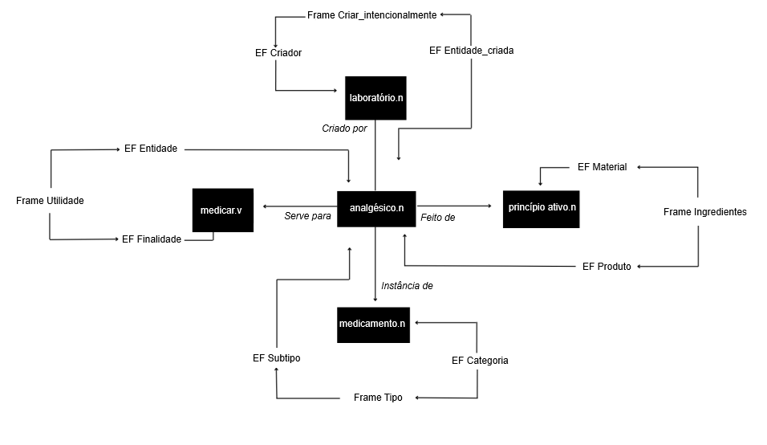
Fonte: Adaptado de (Dutra, 2024)
Por exemplo, a relação agentiva liga analgésico.n à UL “laboratório.n” usando o frame Criar_intencionalmente. Nesse caso, o analgésico é entendido como aquilo que é criado (EF Entidade_Criada), enquanto o laboratório aparece como o agente da ação (EF Criador). A relação constitutiva, por outro lado, conecta “analgésico.n” e “princípio ativo.n” por meio do frame* Ingredientes. Nele, o”analgésico.n” ocupa o papel de Produto, e “princípio ativo.n”, o de Material, indicando do que o analgésico é feito. Já a relação formal é modelada no frame* Tipo, em que “analgésico.n” aparece como um Subtipo e “medicamento.n” como uma Categoria, representando a ideia de que analgésico é um tipo de medicamento. Por fim, a relação télica envolve o frame Utilidade. Nesse caso, “analgésico.n” é associado ao EF Entidade (ou seja, um item com uma finalidade), enquanto a UL “medicar.v” representa sua Finalidade.
A organização das relações na FN-Br, tanto no nível dos frames quanto das Unidades Lexicais, constitui a base do trabalho de anotação desenvolvido no projeto. Para realizar essas anotações de forma padronizada e organizada, a equipe utiliza a WebTool. Na próxima seção, apresentamos um exemplo prático dessa aplicação por meio de um projeto que utiliza a FrameNet Brasil para apoiar pesquisas sobre o enfrentamento da violência contra a mulher.
Exercício prático: Explorando as relações qualia ternárias
Agora é o momento de aplicar os conceitos discutidos! Acesse a lista de frames disponíveis na WebTool e escolha um que lhe pareça interessante. Em seguida, selecione uma das Unidades Lexicais no frame (listadas logo após os EFs) e, com base nela, reflita sobre os aspectos que compõem seu significado. Para isso, associe a UL escolhida às relações qualia que forem possíveis. Para cada dimensão, pense em uma UL que esteja semanticamente relacionada à original e, sempre que possível, pesquise essa nova UL na WebTool para verificar a que frame ela pertence – ou seja, que frame poderia ser responsável por mediar essa ligação entre as duas ULs.
Exemplo: A UL “pizza.n” pertence ao frame Criação_culinária e se relaciona com “farinha.n”, que pertence ao frame Ingredientes. Essas duas ULs estão conectadas por meio desse frame, que faz a mediação de uma relação qualia do tipo constitutiva, já que farinha é parte da composição da pizza.
Para ajudar no processo, as perguntas do Quadro 17.2 foram organizadas segundo cada uma das dimensões qualia e podem servir como guia para sua análise.
Quadro 17.2 Perguntas para cada uma das dimensões qualia
17.4 Projeto DataToStopGBV: Semântica contra a violência de gênero
O projeto DataToStopGBV é uma iniciativa que nasceu da colaboração entre Vital Strategies Brasil e a FrameNet Brasil em 2023. A Vital Strategies Brasil é a filial brasileira da organização global de saúde Vital Strategies, que trabalha em conjunto com o governo e a sociedade buscando implementar medidas que minimizem desafios ligados a questões de saúde pública. A parceria entre a Vital Strategies Brasil e a FrameNet Brasil se deu com uma intenção clara: desenvolver ferramentas para alerta precoce e intervenção em casos de violência de gênero, que pudessem oferecer maior apoio às equipes de saúde, autoridades locais e criadores de políticas públicas.
Este projeto foi também o foco principal da pesquisa de mestrado “Evaluating The Contribution of Framenet to Gender-Based Violence Identification” (Dutra, 2024). Esta seção apresenta um panorama das discussões iniciadas no âmbito dessa pesquisa.
17.4.1 Contexto e motivação
A Violência baseada em gênero (VBG) afeta diversos grupos sociais, no entanto a incidência de casos da violência direcionada às mulheres faz com que este seja o maior foco de pesquisas e normalmente delimita as mulheres como grupo de foco. Seguindo, então, a mesma linha que a Organização Mundial da Saúde (OMS) (WHO, 2024) e o Instituto de Igualdade de Gênero Europeu (EIGE) (EIGE, 2024), o projeto também optou por focar neste grupo em um primeiro momento. Este não é o único ponto de alinhamento entre esta pesquisa e órgãos internacionais que visam aos direitos humanos. A compreensão de que a VBG é uma questão de saúde pública também é defendida pela OMS e corroborada por diversos outros estudos que julgam que a busca por soluções para a sua prevenção é uma prioridade (Garcia-Moreno; Watts, 2011; Öhman et al., 2020; Sweet, 2014).
No Brasil, profissionais da saúde desempenham papel estratégico na identificação e registro de casos de VBG, sendo obrigados por lei a notificar episódios suspeitos ou confirmados ao Sistema de Informação de Agravos de Notificação (SINAN). No entanto, mesmo com a obrigatoriedade legal, o número de subnotificações ainda é alto. Alguns estudos buscam entender as causas que levam a este cenário e evidenciam que o problema parte da falta de preparo para lidar com tais casos, desde o atendimento até a notificação. Entre as principais razões para a subnotificação se destacam o medo de um possível confronto ou represália e também entraves estruturais, tais como a ausência de protocolos, a falta de mecanismos legais de proteção para os profissionais responsáveis pela notificação, dificuldades na identificação de sinais de violência e o conflito com o sigilo profissional (Garbin et al., 2015; Kind et al., 2013).
Considerando este cenário, Vital Strategies Brasil e FrameNet Brasil propuseram o projeto DataToStopGBV, que visa ao desenvolvimento de recursos que possam levar ao alerta precoce de possíveis casos de violência contra mulheres que não foram expressamente reportados aos órgãos competentes. A proposta parte da análise semântica de dados inseridos nos campos abertos de prontuários eletrônicos do SUS, com o objetivo de identificar padrões semânticos, a partir da metodologia da FrameNet, para compreender como tais padrões de violência aparecem nos registros de saúde. Essa proposta vai na contramão da maioria das pesquisas neste campo, que focam em dados parametrizados (Malta et al., 2023; Mascarenhas et al., 2020; Pinto et al., 2021).
No Brasil, a inserção e o registro de informações sobre a população em contextos de saúde pública são realizados por meio de diferentes sistemas. Entre os principais sistemas voltados à coleta de dados sobre atendimentos em saúde e casos de violência estão o e-SUS AB, o Sistema de Informações sobre Mortalidade (SIM) e o SINAN.
O e-SUS AB é responsável por registrar os atendimentos realizados na atenção primária à saúde, a partir de informações do prontuário eletrônico do paciente. Já o SIM reúne dados sobre óbitos tendo como principal fonte a Declaração de Óbito. Grande parte das informações inseridas nesses sistemas segue um formato padronizado: os profissionais devem selecionar códigos a partir de listas pré-estabelecidas, como a Classificação Internacional de Doenças (CID-10), o que acaba por limitar o nível de detalhamento dos casos registrados. No entanto, tanto o e-SUS quanto o SINAN oferecem campos de texto aberto, que permitem uma descrição mais contextualizada das situações atendidas. Apesar de trabalhar com um sistema diferente, o Capítulo PLN na Saúde, por exemplo, também aborda o trabalho com campos de textos abertos que permitem uma descrição narrativa dos atendimentos aos pacientes. Esses são os campos relevantes para o desenvolvimento deste projeto.
Para atingir esse objetivo, o projeto firmou uma parceria com a prefeitura de Recife, que garantiu acesso aos registros do e-SUS, SINAN e SIM para estudo. Com isso, foi necessário o desenvolvimento de uma metodologia capaz de conectar tais sistemas, garantir a segurança dos dados usados e aplicar a metodologia da FrameNet para identificar padrões que pudessem ser usados para criar políticas públicas (veja Figura 17.5).
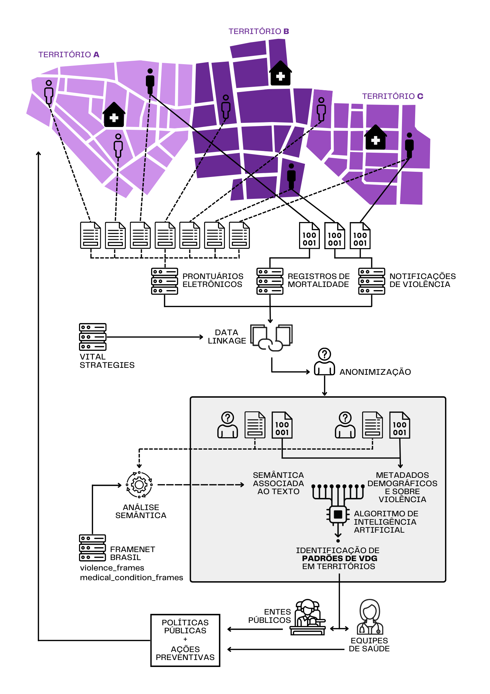
Fonte: (Dutra, 2024, p. 5.)
Desta forma, uma vez que os dados foram disponibilizados, a primeira etapa do processo consistiu no linkage dos bancos de dados da saúde pública de Recife – e-SUS, SINAN e SIM – o que permitiu relacionar os registros de uma mesma pessoa em diferentes unidades, além de mapear possíveis padrões de uso do sistema por vítimas de violência. Tais registros, no entanto, contêm dados extremamente sensíveis que são, por lei, protegidos. Portanto, existe uma preocupação ética relacionada ao acesso e armazenamento de tais tipos de dados, temas estes que também são discutidos nos Capítulos PLN na Saúde e Questões éticas em IA e PLN. Dessa forma, para que o acesso aos dados pudesse ser autorizado, todos os conjuntos utilizados foram previamente anonimizados.
A próxima etapa da metodologia descreve o foco da contribuição da FrameNet Brasil para o projeto que envolve o desenvolvimento do modelo semântico baseado na Semântica de Frames e FrameNet. Esta etapa inclui a modelagem de domínios específicos da Saúde e da Violência e a anotação semântica manual e automática dos dados que permitiu a análise dos registros em campos abertos e identificação de possíveis padrões semânticos ligados a casos de violência baseada em gênero.
A seguir, iremos destacar o processo linguístico-computacional aplicado neste projeto, o recorte de interesse para este capítulo, que descreve a modelagem dos domínios específicos da Saúde e da Violência, o processo de anotação aplicado, assim como os experimentos que avaliaram a contribuição da metodologia para a identificação de casos e de padrões de violência.
17.4.2 A contribuição da FrameNet para identificação da Violência Baseada em Gênero
A construção de uma rede semântica especializada se caracteriza pela modelagem de um domínio específico. No contexto da FrameNet, tal processo constitui a criação de uma representação cognitiva estruturada, que organiza conceitos centrais de um determinado tópico. O domínio, então, corresponde a um grupo de frames que cobrem eventos, participantes, objetos, entre outros, que são organizados e relacionados entre si via relações frame-a-frame. O processo de modelagem de um domínio envolve diferentes etapas que passam pelo estudo de um dado tópico, as ULs e frames relacionados a ele, as relações entre frames e entre ULs – as relações qualia – e, por fim, a anotação semântica que valida a modelagem.
17.4.2.1 Modelagem dos domínios
Este processo foi definido inicialmente por Costa (2020), mas adaptado e ampliado para o escopo deste projeto como é descrito por Dutra (2024). A Figura 17.6 ilustra o passo a passo de 12 etapas da modelagem de domínio específico seguida neste projeto para ambos os domínios.
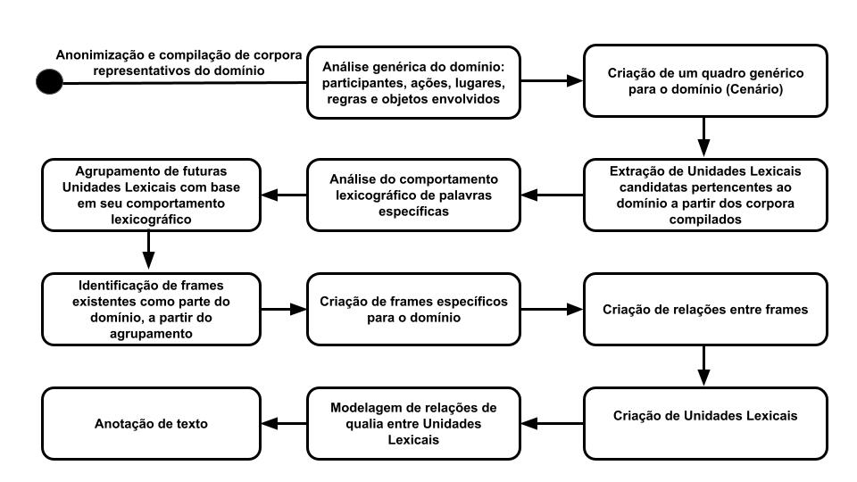
Fonte: (Dutra, 2024, p. 25).
Como descrito na imagem, o primeiro passo na modelagem dos domínios foi a anonimização e compilação dos corpora representativos do domínio: os campos abertos dos registros disponibilizados por Recife do e-SUS e SINAN. Conforme já discutido, tais registros possuem informações extremamente sensíveis que poderiam levar à identificação dos pacientes, o que por si já levanta preocupações. No entanto, quando consideramos que tais pacientes podem ser potenciais vítimas de violência e que sua identificação poderia prejudicar sua segurança, esse fator aumenta o cuidado com que os dados precisam ser trabalhados. Portanto, para garantir a proteção das informações, todos os membros envolvidos assinaram acordos de confidencialidade. Além disso, os dados passaram por um processo de anonimização em três etapas, e seu acesso foi restrito até mesmo entre os participantes, com apenas amostras anonimizadas sendo repassadas para os pesquisadores da FrameNet Brasil. Uma vez que as amostras anonimizadas que compuseram os corpora de análise foram disponibilizadas, um estudo dos domínios foi feito para que um panorama de conceitos relacionados a eles pudesse ser desenhado. Isso implicou a compreensão de quais são os possíveis participantes, ações, lugares, objetos que poderiam estar presentes no domínio. A partir deste estudo, foi modelado o primeiro frame de um domínio: o de cenário. No caso dos domínios da Saúde e Violência, frames existentes foram ajustados para ocupar essa posição. O frame Cenário_de_interações_médicas foi reestruturado para ser mais amplo e se tornou Cenário_da_saúde. Enquanto o frame Violência foi ajustado para Cenário_da_Violência.
Os próximos passos estão relacionados com lemas que são candidatos a ULs. Primeiramente, a ferramenta Keywords do software Sketch Engine (Kilgarriff; Al., 2014) foi usada para extrair termos mais relevantes ao domínio. Isso foi feito a partir de uma comparação dos corpora específicos com um corpus genérico, o Portuguese Web 2020. De acordo com a frequência de ocorrência de um termo, ele era considerado tendo maior ou menor probabilidade de estar relacionado ao domínio. Dessa forma, palavras como “dor de cabeça.n” ou “abuso.n” se destacavam como tendo maior probabilidade de pertencer aos domínios em comparação a palavras como “dia.n” ou “almoço.n”, por exemplo. A lista inicial de tais termos foi composta pelas 1.000 palavras e 1.000 multiwords13 (Capítulo Expressões multipalavras) com maior chance de pertencer ao domínio.
Uma vez que esta etapa foi concluída, os termos da lista gerada foram analisados quanto ao seu comportamento lexicográfico e o agrupamento das futuras ULs foi feito com o objetivo de identificar ULs pertencentes a frames existentes ou novos frames. A modo de ilustração, houve uma grande ocorrência de ULs relacionadas ao frame Parentesco – “pai.n”, “mãe.n”, “filho.n” – no entanto, tal frame não faz parte diretamente de nenhum dos domínios em foco. Já ULs que nomeiam doenças – “gripe.n”, “enxaqueca.n”, “infecção.n” puderam ser relacionadas diretamente ao Condições_em_saúde.
Em um segundo contraponto, havia também um grande número de ULs que poderiam estar relacionadas a este frame, por se referirem a condições de saúde – tais como “dor de cabeça.n”, “febre.n” e “coriza.n”. No entanto, sua análise apontou a necessidade da modelagem de um novo frame, o de Sintomas. Esta etapa do processo permitiu uma melhor compreensão de quais frames existentes deveriam ser incluídos nos domínios e quais precisariam ser modelados para formar o domínio.
Com isso, os próximos passos foram a modelagem dos frames sugeridos e das relações entre frames que precisavam ser estabelecidas dentro da rede semântica da FrameNet Brasil. O domínio da Saúde possui um total de 35 frames, desses, 17 foram modelados a partir das demandas deste projeto. Dos que já estavam no banco, seis precisaram ser modificados. Já o domínio da Violência possui 48 frames, sendo um modificado e 5 novos. Com os frames de cada domínio definidos, foi possível conectá-los via relações frame-a-frame. As Figuras 17.7 e 17.8 ilustram as relações, sendo que cada cor, como explicado anteriormente, representa um tipo de relação – vermelho: herança, azul: subframe, verde: uso, amarelo: causativo de, marrom: incoativo de, preto: precedência, rosa: perspectiva de e roxo: ver também. As descrições da implicatura de cada uma das relações pode ser revista na Subseção As relações frame-a-frame.
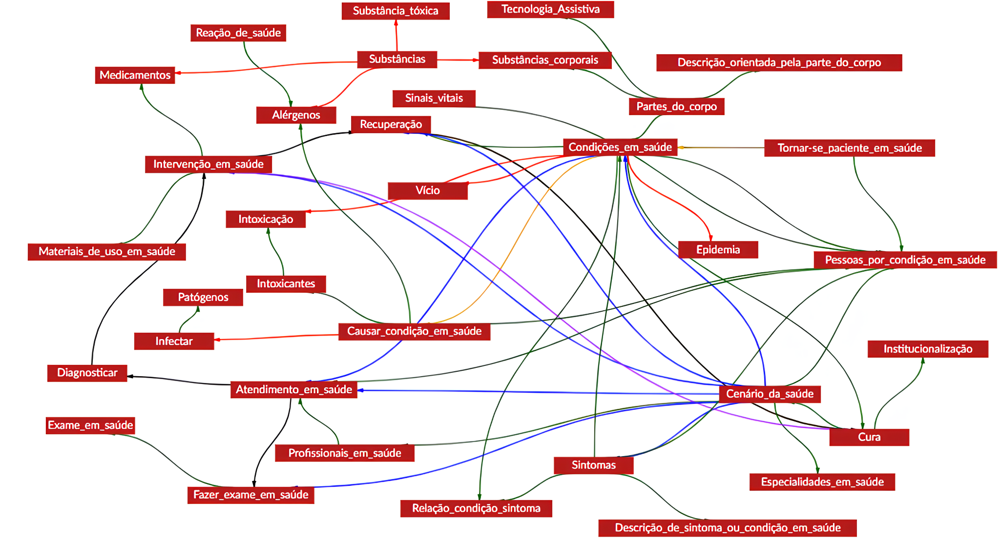
Fonte: Webtool 4.1
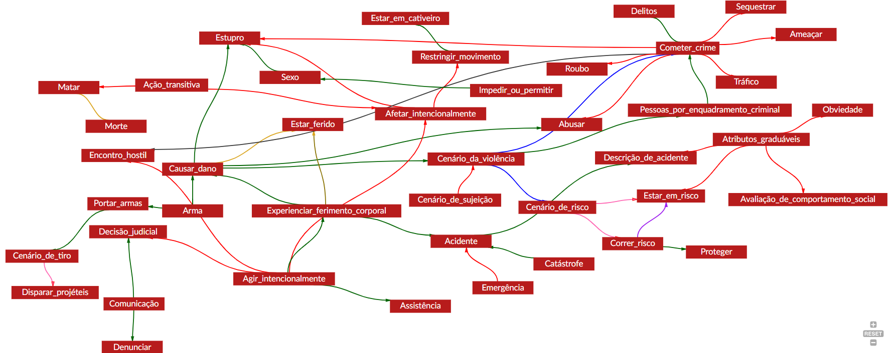
Fonte: Webtool 4.1
Os próximos passos estão ligados às ULs. Após a definição das relações entre os frames, os lemas agrupados como possíveis ULs foram associados aos frames na base de dados e às relações qualia foram definidas. Para que isso pudesse ser feito, no entanto, os lemas e wordforms – possíveis variações de cada lema tais como flexão e conjugação - precisavam existir na Webtool para que as estruturas fossem reconhecidas na próxima fase: a da anotação.
Para este projeto, no entanto, além das wordforms tradicionais foram acrescentadas grafias alternativas e abreviações. Isso foi feito devido ao caráter dos corpora que possuem jargões específicos do âmbito da saúde e foram “construídos” durante consultas em unidades de saúde brasileiras que geralmente estão sob alta demanda, o que pode levar a erros ortográficos e de digitação. Ignorar tais ocorrências levaria à perda significativa de dados que não seriam reconhecidos.
Com todos os lemas e wordforms adicionados, as ULs foram criadas e as relações qualia definidas. Como introduzido na Subseção As relações qualia ternárias, as relações qualia relacionam ULs o que permite a expansão de suas informações semânticas. Existem quatro tipos de relações qualia: agentiva, formal, constitutiva e télica que na FrameNet Brasil são intermediadas por frames como ilustrado no Quadro 17.1. Até este momento, foram criadas 4.698 relações entre ULs pertencentes aos domínios em foco.
DESAFIO: Frame de cenário para domínios específicos
Com base na descrição acerca do processo de modelagem de um domínio, propomos o seguinte desafio: a proposta de um domínio específico e a modelagem de um frame de cenário para o domínio proposto. No momento, a base de dados da FrameNet Brasil possui por volta de 1.200 frames e cinco domínios específicos: turismo, esporte, saúde, violência e educação.
Para a modelagem do frame de cenário, o domínio precisa ser estudado para que seja possível definir o frame e os seus elementos de frame – nucleares e não-nucleares. Na Webtool 4.1 é possível acessar outros frames de cenário, para melhor entendimento se necessário. A modelagem do frame deve ser feita pela plataforma Lutma. A plataforma é intuitiva e nela também estão disponíveis vídeos tutoriais.
Dúvidas podem ser enviadas para o email dos autores deste capítulo.
17.4.2.2 Anotação Computacional
A anotação computacional neste projeto foi dividida em duas etapas. A primeira delas foi a anotação manual feita na plataforma Webtool. Dada a natureza dos dados, uma versão da plataforma foi criada com acesso restrito aos integrantes do projeto. O primeiro objetivo da anotação manual foi validar a modelagem do domínio. A anotação computacional é o último passo do processo e permite uma análise geral da efetividade do domínio, tais como a suficiência dos frames – em cobertura e em estrutura.
A metodologia de anotação utilizada foi baseada na definida por Ruppenhofer et al. (2016) descrita na Seção FrameNet Brasil. O objetivo do projeto e as características dos corpora levaram a pequenos ajustes, tais como (1) o foco apenas na camada semântica; (2) a ausência da anotação de Instanciações Nulas (NI); (3) liberdades quanto à localidade sintática; e (4) a anotação por campo e não por sentença.
Na Figura 17.9, observa-se a anotação da UL “dor.n” no registro “Paciente relata queimação ao fazer xixi. Dor no quadril.”14 que exemplifica as alterações nas diretrizes de anotação. Neste exemplo, nota-se que a anotação contém apenas informações semânticas. Outro ajuste feito diz respeito à presença de dois períodos no campo de anotação, quando normalmente”Paciente relata queimação ao fazer xixi” e “Dor no quadril” estariam em campos de anotação distintos. Observa-se também que a marcação do elemento de frame PACIENTE que poderia ter sido anotado como uma Instanciação Nula Definida - pelo contexto do prontuário - ou uma Instanciação Nula Indefinida - por não se saber quem é este paciente, foi marcada na sentença no período anterior. No entanto, como foi optado por não anotar Instanciações Nulas, a anotação do elemento de frame foi feita fora da localidade sintática - neste caso, em outro período.
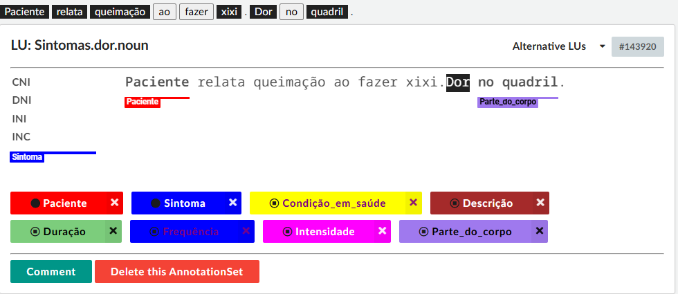
Fonte: Adaptada de (Dutra, 2024)
Ao todo foram anotadas 2.352 sentenças, sendo que foram criados 6.313 Annotation Sets no domínio da Saúde e 8.309 no domínio da Violência. Este processo foi realizado por sete anotadores com diferentes níveis de experiência. Reuniões semanais também foram realizadas para discutir o processo de anotação e esclarecer possíveis dúvidas.
A segunda etapa de anotação consistiu na anotação automática dos dados. A partir da amostra obtida pela anotação manual, uma versão do rotulador automático LOME (Xia et al., 2021) foi treinada do zero – com cerca de 200 frames a mais do que os usados no artigo citado – e usada para a anotação em larga escala dos corpora. O LOME é um modelo desenvolvido para extração de informações multilíngues com um pipeline que inclui um parser semântico da FrameNet. O modelo foi usado para anotar os registros do e-SUS AB, SINAN e CID. Ele é capaz de identificar as ULs alvos, rotular o frame e seus elementos. A avaliação da anotação utilizou as mesmas métricas propostas por Xia et al. (2021): exact match (em) e span match (sm), todas considerando precision, recall e F1. A métrica em exige correspondência exata de todo o trecho da anotação. Já a sm avalia apenas a detecção correta dos limites do trecho, sem considerar rótulos. Os resultados foram similares aos alcançados por Xia et al. (2021), o que aponta uma boa performance do modelo, uma vez que foram usadas informações de domínios mais específicos, frames novos e mais de 5.000 ULs que haviam sido anotadas pela primeira vez.
17.4.3 Avaliação da identificação da Violência Baseada em Gênero
Para avaliar os benefícios do uso da Framenet para a identificação de casos de VBG, três experimentos foram feitos. Os experimentos contrastavam o uso da metodologia da FrameNet classificando casos como sendo ou não casos de VBG em uma configuração que se apoiava nos dados dos campos de texto abertos e fechados.
Os registros que foram utilizados para a classificação se enquadram em quatro grupos: (1) violência – casos com código CID para violência ou notificação SINAN; (2) não violência – sem evidências de violência, muitas vezes associados a doenças; (3) provável violência – casos com notificação de violência sem código CID para agressão 30 dias antes da mesma; e (4) desconhecidos – não se relaciona a nenhuma das categorias. Foram considerados 801 casos, sendo 167 deles classificados como violência.
A partir dos experimentos, foram feitas as avaliações quantitativas e qualitativas. A avaliação quantitativa focou na comparação das performances dos experimentos. Já a avaliação qualitativa observou os atributos considerados mais relevantes para o modelo e foi complementada com a análise dos frames e unidades lexicais com maior ocorrência na anotação para ambos os domínios.
A avaliação do processo de modelagem e anotação manual dos domínios também foi avaliada no âmbito de Dutra (2024). No entanto, para este recorte, o foco será nos resultados diretamente ligados à avaliação da contribuição da FrameNet para a identificação de casos de VBG. Os experimentos e os processos avaliativos aplicados serão discutidos a seguir.
17.4.3.1 Os experimentos
Os três experimentos usaram o modelo Support Vector Machine (SVM) (Cortes; Vapnik, 1995), um modelo frequentemente usado em tarefas de classificação. A escolha foi motivada devido a sua capacidade de lidar com dados com muitas variáveis e flexível para separar padrões tanto em casos lineares quanto não lineares, ou seja, em que não há uma divisão simples entre as classes. Uma das vantagens do SVM é a possibilidade de ranquear a importância dos atributos na escolha da classificação, o que foi feito com o objetivo de apoiar a análise qualitativa e reforçar a relevância da informação semântica da FrameNet.
O primeiro e o segundo experimentos utilizaram o mesmo pipeline de seis etapas: (1) a anotação com LOME; (2) a identificação das LUs, (3) a criação dos atributos; (4) a filtragem dos vetores com base em sua ocorrência; (5) a geração da representação TF-IDF15 dos vetores; e (6) a aplicação da análise do componente principal (PCA)16 às representações TF-IDF. A diferença entre os dois experimentos está nos dados que foram usados. O primeiro experimento considerou apenas os campos abertos de texto anotados, enquanto o segundo, além dos campos abertos anotados, considerou também um grupo de parâmetros do campo fechado anotado para frames: orientação sexual e gênero, necessidade de prótese, raça e idade.
Por fim, o terceiro experimento consistiu apenas na criação de atributos a partir das informações dos campos parametrizados, ou seja, os dados considerados não passaram pelo processo de anotação. Consideramos vinte dos campos disponíveis, dentre eles características do paciente, bloco e número CID, localidade e variáveis temporais acerca dos atendimentos.
17.4.3.2 Avaliação Quantitativa
A avaliação quantitativa dos modelos foi feita por meio de validação cruzada. Esta é uma técnica de avaliação que permite o treinamento e teste do modelo com diferentes combinações dos conjuntos de dados utilizados (Kohavi, 1995). As métricas consideradas foram F1 score, recall e precision. O resultado final é uma média calculada a partir das diferentes combinações feitas. Para este projeto, o conjunto de dados foi dividido em cinco conjuntos, portanto foram feitas cinco interações e a média foi calculada a partir do resultado delas. O resultado pode ser visto na Tabela 17.1, que apresenta o desempenho final da validação cruzada, seguido da variação, que indica a dispersão dos resultados entre as diferentes rodadas do processo.
| Experimento | F1 | Recall | Precision |
|---|---|---|---|
| 1 | 0.772 (0.113) | 0.838 (0.071) | 0.756 (0.190) |
| 2 | 0.771 (0.114) | 0.832 (0.071) | 0.759 (0.189) |
| 3 | 0.461 (0.089) | 0.701 (0.173) | 0.345 (0.057) |
Fonte: (Dutra, 2024)
Os resultados obtidos apontam que, quando a anotação semântica seguindo as diretrizes da FrameNet Brasil foi considerada, a performance do modelo obteve um desempenho melhor na identificação de casos de VBG. O primeiro experimento apresentou o melhor desempenho, com alta recall e equilíbrio entre precision e F1, o que é ideal no contexto da pesquisa, em que falsos positivos são preferíveis a falsos negativos. O segundo modelo, que inclui dados parametrizados, teve desempenho semelhante, que confirma a vantagem do uso da metodologia. Já o terceiro experimento teve resultados inferiores, com alta taxa de falsos positivos e grande variação nos testes. Esses achados reforçam a hipótese de que informações semânticas extraídas de texto livre acrescida de informações do modelo semântico da FrameNet são mais eficazes na identificação de casos de VBG.
17.4.3.3 Avaliação Qualitativa
Para a avaliação qualitativa, foram analisados o primeiro e o terceiro experimento. O foco foi nos atributos que mais influenciaram a classificação dos casos como violência ou não violência. No entanto, é importante ressaltar que neste momento não foi possível determinar para qual classe cada atributo foi mais relevante, apenas que ela teve peso na decisão de classificação do modelo. De modo complementar à análise semântica do primeiro experimento, uma lista dos frames e ULs mais evocados dos domínios da Saúde e da Violência de acordo com a anotação automática do LOME também foi analisada em busca de mais padrões. Essa lista considerou apenas a anotação de casos confirmados de VBG.
A análise dos atributos mais relevantes no terceiro experimento revelou uma concentração em dados de localização das unidades de saúde, indicando um viés, já que esse fator não tem correlação direta com a ocorrência de violência; pelo contrário, alimenta estereótipos. O atributo raça também teve destaque, o que pode refletir um viés decorrente da inconsistência no preenchimento do campo, muitas vezes deixado em branco. Esse resultado sugere que o modelo tende a considerar mais atributos pessoais, e não o contexto do atendimento.
Por outro lado, alguns códigos CID relacionados ao motivo da busca por atendimento também foram identificados, com destaque para códigos que podem estar associados a casos de violência sexual ou situações que exigem acompanhamento, como o pré-natal. Apesar disso, tais variáveis foram menos frequentes. Isso reforça novamente que o uso dos campos parametrizados não traz informações que podem ser cruciais sobre o atendimento, e também tendem a reforçar estereótipos ao focar no indivíduo e não na causa para a busca pelo serviço de saúde. Esses dados podem ser vistos na Figura 17.10.
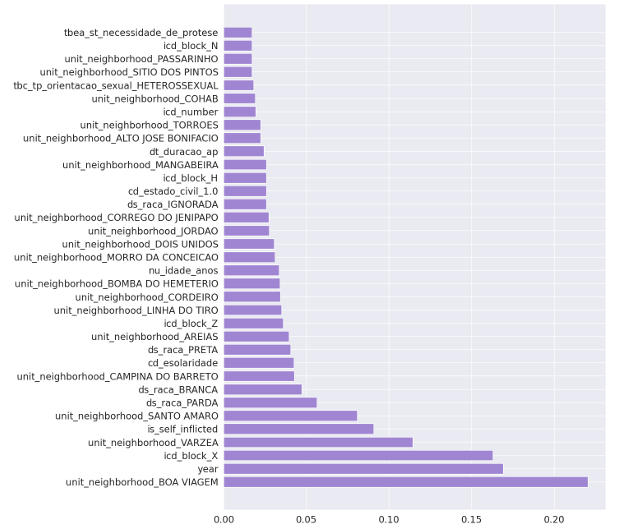
Fonte: (Dutra, 2024)
Já a análise do primeiro experimento, apesar de preliminar, apresentou melhor resultado quanto à identificação de possíveis padrões de violência. Os atributos de maior relevância estão listados na Figura 17.11. Dentre eles, destacam-se frames genéricos como Relações_pessoais e Medo, que, embora fora do domínio de violência, podem indicar relações com o agressor ou o cenário emocional envolvido. Entre os frames do domínio da violência, apenas Experienciar_ferimento_corporal foi identificado, o que pode estar relacionado à baixa frequência desses frames nos registros do e-SUS. Ainda assim, sua presença sugere que sinais de violência podem surgir indiretamente por meio de dados de saúde. No domínio da saúde, destacaram-se Condições_em_saúde, Medicamentos (com múltiplos elementos de frame relevantes) e Intervenção_em_saúde, com ULs como prescrever.v e administrar.v. Tais resultados reiteram que os registros médicos podem fornecer pistas importantes para a identificação precoce da violência baseada em gênero.
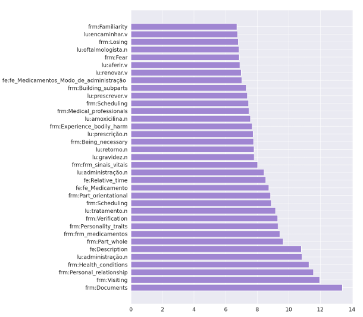
Fonte: (Dutra, 2024)
A análise da lista extraída da anotação do LOME dos casos de violência trouxe mais possíveis padrões que merecem atenção. No domínio da saúde, dois grupos de ULs de Condições_em_saúde se destacaram. O primeiro relacionado à gravidez. Este fato, no momento, leva a duas hipóteses: é possível que este resultado se dê devido a um enviesamento do modelo, uma vez que o grupo de estudo é composto por mulheres. Uma alternativa, no entanto, é de que a gravidez aumenta a vulnerabilidade da mulher, fazendo com que ela seja mais propensa a permanecer em um relacionamento abusivo. O segundo grupo que chama atenção é o de ULs relacionadas a transtornos mentais. Novamente, existe a possibilidade de enviesamento do modelo, já que mulheres podem buscar ajuda profissional com maior frequência nestes casos do que homens. No entanto, tal estado pode também ser uma consequência da violência experienciada.
No domínio da Violência, destacam-se também dois grupos de ULs. O primeiro relacionado à automutilação e ao suicídio. Tais dados foram encontrados com alta frequência e demandam um estudo isolado, mas já exibem forte indício de serem uma consequência da violência. O segundo grupo está relacionado a abuso sexual, resultado esse que foi reforçado nos dados do domínio da Saúde devido à alta incidência de exames e doenças ligadas a doenças sexualmente transmissíveis. Esses resultados, tanto da avaliação semântica do modelo, quanto dos resultados obtidos a partir da anotação LOME, reforçam mais uma vez o valor que a análise de tais dados via FrameNet pode trazer para a compreensão de padrões de violência nos registros de saúde e identificação de casos de VBG.
17.5 Multimodalidade, acessibilidade cultural e sentido compartilhado no Audition: dataset multimodal de curtas-metragens acessíveis
A comunicação humana em contextos reais de uso é fundamentalmente multimodal. A noção de multimodalidade, tal como entendida neste capítulo, refere-se à participação simultânea e coordenada de diferentes modos comunicativos (verbal, visual, sonoro, corporal entre outros) na construção de sentido. Assumimos uma concepção fenomenológica do termo, como discutido por Torrent; Coneglian (2025), por estarmos interessados nos meios (multi)semióticos pelos quais os indivíduos constroem significado na experiência situada da linguagem.
Essa concepção ultrapassa a ideia de uma simples junção de semioses, pois envolve uma estrutura compartilhada de significados, na qual os elementos provenientes dos diferentes modos se articulam de forma integrada. Em outras palavras, a multimodalidade, tal como concebida em nossas pesquisas, diz respeito à articulação entre modos em torno de um sentido coerente, ativado e inferido no uso situado da linguagem.
É a partir dessa perspectiva que passamos a relacionar a Semântica de Frames e a FrameNet Brasil a um contexto multimodal. Partimos do pressuposto de que, assim como o texto verbal evoca frames, imagens, sons e gestos também o fazem. Essa premissa abriu caminho para a criação da ReINVenTA (Research and Innovation Network for Vision and Text Analysis), uma rede de pesquisa dedicada ao processamento semântico computacional de objetos multimodais.
A atuação da ReINVenTA concentra-se em quatro eixos principais: (i) a ampliação da cobertura da FrameNet para o português brasileiro, incorporando dados multimodais; (ii) a constituição de um gold standard dataset de objetos multimodais anotados semanticamente e validados em perspectiva psicolinguística; (iii) o desenvolvimento de algoritmos e modelos para rotulação automática e descoberta de conhecimento em objetos multimodais; e (iv) a proposição de melhores práticas para tradução audiovisual acessível, com ênfase na audiodescrição fílmica.
Esses objetivos se materializam em três datasets distintos que compõem, até o momento, o conjunto de dados da rede.
O primeiro é o Frame² (Belcavello et al., 2024), composto por episódios do programa Pedro pelo Mundo. Esse dataset foi anotado para frames, elementos de frames e categorias de objetos reconhecíveis por algoritmos de visão computacional para as modalidades de vídeo, áudio original e legendas.
O segundo é o Framed Multi30k (Viridiano et al., 2024), que expande o dataset Multi30k com descrições em português e anotações semânticas visuais. Neste dataset, foram produzidas cinco descrições em português e uma descrição traduzida do inglês para cada uma das cerca de 30 mil imagens do dataset Flickr 30k. Além disso, o dataset inclui anotações automáticas de frames para todas as legendas em inglês e português, bem como anotação manual de frames, elementos de frame e bounding boxes aplicadas às imagens do dataset Flickr 30k Entities.
O terceiro é o Audition, dataset de curtas-metragens brasileiros acessíveis, que será apresentado a seguir.
17.5.1 O dataset Audition
O Audition é um dataset multimodal em desenvolvimento, composto por curtas-metragens brasileiros anotados semanticamente com base na teoria da Semântica de Frames e no modelo da FrameNet Brasil. Sua criação foi motivada pela necessidade de recursos que integrem os modos sonoro (verbal e não verbal) e visual em português brasileiro com ênfase na promoção do acesso a conteúdos audiovisuais, especialmente para pessoas com deficiência visual.
Embora os modelos atuais de PLN venham avançando significativamente no tratamento de textos escritos, ainda há pouca atenção às necessidades de usuários que dependem de traduções intersemióticas – como a audiodescrição – para ter acesso a obras audiovisuais, por exemplo.
O Capítulo Conjunto de dados, dataset e corpus oferece um excelente panorama sobre a preparação e a avaliação de dados linguísticos para PLN, discutindo, entre outros pontos, a distinção entre corpus e dataset. Quem já leu o capítulo deve ter alguma opinião formada sobre o conjunto de dados multimodais que configura o Audition. A partir dessa discussão, propomos uma reflexão: o Audition, enquanto conjunto de dados multimodais, deve ser classificado como dataset ou também pode ser considerado um corpus?
De acordo com o Capítulo Conjunto de dados, dataset e corpus, um dataset é um conjunto de dados linguísticos anotados por pessoas ou feito por máquinas e revisto por pessoas. Já um corpus linguístico pode ter sido anotado automaticamente. A depender dos objetivos da pesquisa, receber um material já categorizado previamente pode facilitar a tarefa de estudo desejada. Essa questão diz respeito à utilidade do material em discussão.
Outro critério importante é a origem dos dados. Para configurar-se como corpus, o conjunto de textos deve ser composto por material linguístico naturalmente produzido, ou seja, não elaborado especificamente para fins experimentais ou científicos. Em contrapartida, datasets podem ser criados com a finalidade explícita de alimentar modelos, validar hipóteses ou compor bancos de dados anotados, como é o caso do dataset Multi30k (Viridiano et al., 2024).
Em se tratando de dados multimodais, como os que compõem o Audition, as distinções conceituais entre corpus e dataset devem ser compreendidas de maneira ampliada. Isso porque os dados anotados não se restringem à linguagem verbal, mas envolvem também o modo visual e sonoro, organizado em alinhamento temporal com base nas unidades significativas do vídeo.
Nesse cenário, a noção de dado linguístico é estendida para abranger modos semióticos diversos que participam conjuntamente da construção de sentido. O alinhamento semântico entre esses modos – textual, visual e sonoro – permite explorar relações intermodais e avaliar traduções intersemióticas na construção de sentido da obra fílmica.
Tendo em vista esse enquadramento conceitual, o Audition pode ser caracterizado como um dataset multimodal padrão-ouro, cuja cobertura inclui anotação manual de transcrições derivadas de textos verbais (orais e escritos) e de conteúdo visual dinâmico (vídeo). Além do áudio original, ele contempla diversos modos de tradução intersemiótica, tais como audiodescrição, legendas, closed captions e texto sobreposto à imagem (on-screen text), todos anotados semanticamente por meio de frames.
O Quadro 17.3 apresenta a relação entre as modalidades contempladas, os tipos de dados e as anotações semânticas realizadas em cada caso.
Quadro 17.3 Cobertura Multimodal do Dataset Audition
Todos esses modos, que atuam como recursos importantíssimos de acessibilidade cultural, estão alinhados semântica e temporalmente, permitindo a observação da sincronicidade e da evocação de frames na construção de sentido. Esse alinhamento, detalhado na Seção FrameNet Brasil, oferece subsídios para experimentos de similaridade semântica entre modos, contribuindo para avaliação da qualidade de traduções intersemióticas. Assim, o Audition é tanto um recurso para o desenvolvimento de sistemas de tradução audiovisual acessível, como também uma ferramenta para o estudo da construção e compartilhamento de sentido entre diferentes modalidades comunicativas.
Para garantir um bom dataset linguístico, o Capítulo Conjunto de dados, dataset e corpus destaca cinco características centrais. A seguir, cada uma dessas dimensões será discutida a partir das especificidades do Audition.
(i) consistência.
“Por consistência, entende-se que fenômenos semelhantes devem ser anotados, isto é, analisados da mesma maneira. A consistência permite que algoritmos de aprendizado de máquina generalizem a partir dos dados e que as avaliações sejam confiáveis”. (Seção Características de um bom dataset linguístico)
A anotação semântica no Audition foi realizada com base na metodologia de anotação full text da FrameNet e nas guidelines desenvolvidas pela FrameNet Brasil para anotação semântica multimodal. Essas diretrizes asseguram a rotulação de frames, unidades lexicais (LUs), entidades visuais (visual entities) e elementos de frame (FEs) a todas as modalidades comunicativas do dataset.
A equipe responsável pela anotação é composta por estudantes de graduação com bolsas de Iniciação Científica, previamente treinados em anotação semântica baseada em frames. Todo o trabalho é supervisionado por anotadores experientes vinculados à FrameNet Brasil.
Adotamos uma abordagem perspectivista (Basile et al., 2021) da anotação, que reconhece que a seleção de frames pode variar legitimamente entre anotadores em função de fatores como conhecimento de mundo, contexto situacional e a própria perspectiva interpretativa assumida.
Para diminuir inconsistências e assegurar qualidade da anotação, o processo inclui: tutoriais iniciais de formação, encontros semanais com espaço para discussão coletiva de decisões, resolução de dúvidas e refinamento colaborativo das anotações. Esse modelo de curadoria ativa e engajamento interpretativo é o que proporciona a consistência no Audition.
(ii) variedade:
“Um bom dataset deve ser variado (ou balanceado) com relação aos fenômenos para os quais foi construído” (Seção Características de um bom dataset linguístico)
O Audition contempla filmes curtos de diferentes gêneros – ficção, animação, documentário e performance – com diversidade estilística e discursiva. Há ainda variação entre os modos comunicativos incluídos, o que amplia o escopo de análise de fenômenos intersemióticos. A diversidade de contextos e gêneros assegura que o dataset seja útil para tarefas no PLN e na tradução audiovisual acessível. O quantitativo por gênero cinematográfico e modos comunicativos está exibido na Figura 17.12.
(iii) representatividade:
“Esperamos que os textos que compõem o corpus/dataset sejam representativos do tipo de texto que será alvo da aplicação, isto é, ao qual o modelo baseado nesse dataset será aplicado” (Seção Características de um bom dataset linguístico)
Como conjunto de dados voltado ao estudo e treinamento de tarefas computacionais em tradução audiovisual acessível em português brasileiro, o Audition foi construído a partir de obras cinematográficas acessíveis. Embora haja vários recursos disponíveis, a opção por audiodescrição foi a prioridade e está presente em todos os curtas que compõem o dataset.
(iv) documentação:
“Um bom dataset é um dataset bem documentado, que informa a origem do conteúdo textual, as classes de anotação e as diretrizes usadas para anotar, as características e/ou formação dos anotadores”. (Seção Características de um bom dataset linguístico)
A documentação do Audition inclui quatro etapas principais: (a) seleção e liberação das obras cinematográficas com audiodescrição; (b) formações teóricas e práticas voltadas à anotação estrutural e à anotação semântica multimodal; (c) realização da anotação estrutural, que incluiu a transcrição e o alinhamento temporal entre os modos transcritos e o conteúdo visual dinâmico; e (d) anotação semântica multimodal, envolvendo a rotulação de texto e de vídeo em termos de frames, elementos de frames, unidades lexicais e entidades visuais.
Complementarmente, a documentação inclui metadados sobre os anotadores, incluindo formação acadêmica e grau de experiência com a anotação. Esses registros são importantes para proporcionar a transparência do processo, facilitar a replicação de experimentos, além de possibilitar comparações entre modalidades comunicativas e avaliação crítica do material produzido.
(v) tamanho:
“o tamanho é um aspecto que precisa ser levado em conta. E por tamanho não me refiro apenas ao tamanho do corpus em tokens ou palavras, mas também à quantidade de fenômenos rotulados”. (Seção Características de um bom dataset linguístico)
Como bem pondera (Capítulo Conjunto de dados, dataset e corpus), o critério do tamanho de um dataset diz respeito tanto à quantidade total de dados quanto ao número efetivo de itens anotados. Nesse sentido, ele deve ser suficiente para permitir treinamento e avaliação confiáveis, conforme o tipo de anotação realizada. Discussões sobre o tamanho não são conclusivas, como destacam (Berber Sardinha, 2004; Biber, 1993; Bowker; Pearson, 2002) e Capítulo Conjunto de dados, dataset e corpus. Isso porque o tamanho precisa ser representativo diante do propósito assumido. Desse modo, por mais que a quantidade seja algo relevante, especialmente no contexto dos Large Language Models (LLMs), esse tópico não é fechado. Ele não deve ser tomado isoladamente como critério de qualidade ou suficiência, pois precisa ser pensado em articulação com a finalidade da tarefa para a qual está sendo construído.
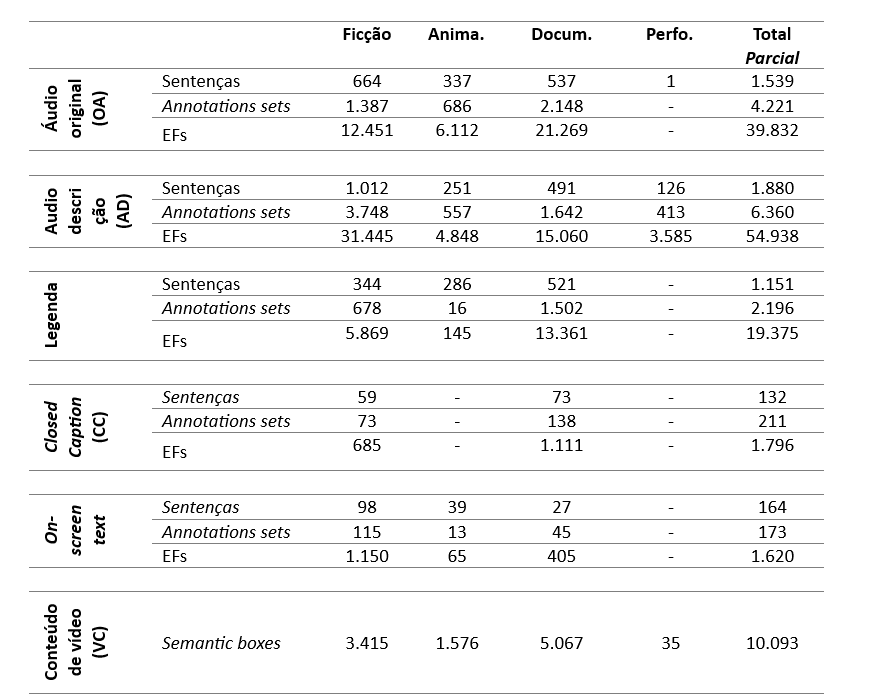
O Audition é um material que está em fase de conclusão. Contém cerca de 240 minutos de material audiovisual, segmentado, até o momento, em mais de 10.093 unidades visuais anotadas semanticamente via bounding boxes. Reúne aproximadamente 5 mil sentenças advindas de diferentes modos de acessibilidade e atuantes em diferentes gêneros cinematográficos. Essas sentenças resultaram, até o momento, em mais de 13 mil conjuntos de anotações (annotations sets) e cerca de 118 mil elementos de frames anotados. A Figura 17.12 apresenta esses números organizados por gêneros cinematográficos17.
Checklist do Audition: construindo e avaliando um dataset linguístico multimodal
Baseado nos critérios da Capítulo Conjunto de dados, dataset e corpus*
Na Figura 17.13, propomos um checklist para acompanhamento da criação do Audition. Pedimos que você, leitora ou leitor, preencha os campos com base nas informações já apresentadas nesta seção. Após a leitura das seções seguintes, retorne a este quadro para revisar a complementar seus apontamentos. Este exercício pode ajudá-la(o) a refletir sobre os passos metodológicos necessários para a criação de um dataset linguístico (e multimodal) de qualidade e a identificar, de forma crítica, como eles se materializam em projetos reais, como este.
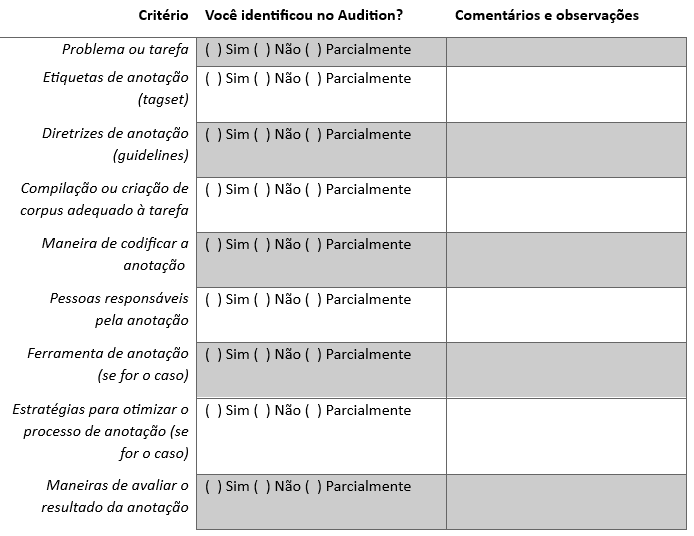
17.5.2 Anotação semântica multimodal
A anotação semântica do Audition fundamenta-se nos princípios da Semântica de Frames (Fillmore, 1982), segundo os quais o significado de uma palavra ou expressão está ancorado em um “quadro” ou “moldura” conceitual, do inglês frame. Na linguagem verbal, o frame é ativado por unidades lexicais, as ULs, que podem ser verbos, substantivos, adjetivos etc. Cada frame envolve um conjunto de papéis semânticos denominados elementos de frame (EFs), que representam participantes, objetos, ações e relações relevantes para a cena conceitual evocada.
No contexto multimodal do Audition, parte-se da premissa de que não apenas a linguagem verbal, mas imagens, gestos e sons não verbais também evocam frames. Assim, a tarefa dos anotadores consiste em identificar e registrar essas evocações em cada modo comunicativo, possibilitando a comparação e o alinhamento semântico entre eles. A anotação deste dataset é realizada integralmente por humanos e segue uma abordagem orientada pelo texto (text-oriented), na qual o processo de anotação parte da análise dos áudios transcritos para guiar a rotulação semântica do conteúdo visual.
No caso específico do Audition, adotamos como diretriz metodológica que o conteúdo de vídeo fosse anotado para situações, quais sejam eventos, estados, processos e relações. Esse recorte está alinhado com o objetivo do dataset de oferecer uma base para a análise da construção de sentido em sequências audiovisuais, priorizando a ação, a mudança de estado e os processos perceptivos. Em contraste, em (Belcavello et al., 2024), o protocolo de anotação previu também a marcação de entidades, por meio de frames centrados em participantes ou objetos nas cenas de vídeo. Essa diferença metodológica reflete a flexibilidade do modelo da FrameNet Brasil frente a diferentes objetivos analíticos e tarefas de anotação.
A ferramenta utilizada para anotação é a Webtool 4.1, adaptada especificamente para a multimodalidade. Essa plataforma permite trabalhar com os modos em sincronia e oferece funcionalidades para:
transcrever o material audiovisual e alinhá-lo ao tempo de exibição do conteúdo de vídeo;
visualizar simultaneamente os segmentos verbais e visuais;
criar bounding boxes associadas a entidades visuais evocadoras de frames;
selecionar unidades lexicais e entidades visuais;
associar essas unidades e entidades a frames e a seus respectivos elementos, com base na rede semântico-lexical da FrameNet Brasil.
A seguir, serão apresentados exemplos de anotação de texto e de vídeo, com o objetivo de ilustrar os dois processos adotados no Audition. O exemplo da Figura 17.14 é um caso de anotação linguística. No caso das modalidades verbais (como Áudio Original e Audiodescrição), a cada UL selecionada, o anotador associa o frame correspondente e especifica os elementos de frame (EFs) que estiverem lexicalmente instanciados ou inferíveis a partir do contexto verbal ou visual.
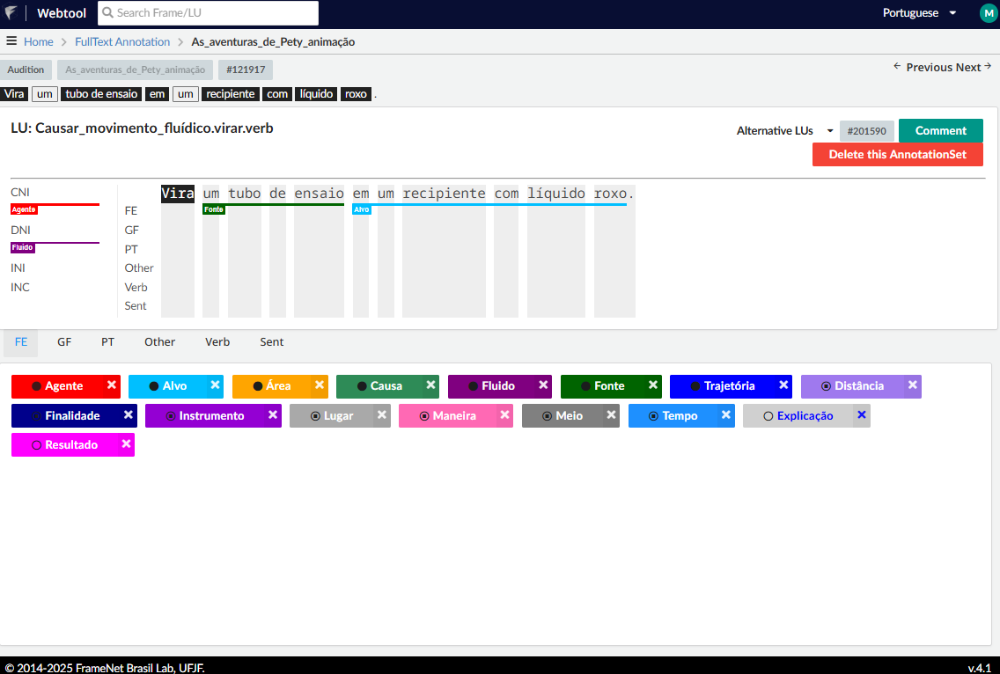
Na sentença “Vira um tubo de ensaio em um recipiente com líquido roxo”, uma das ULs anotadas é “virar.v”, que evoca Causar_movimento_fluídico. Esse frame prevê EFs como:
Agente: quem faz com que o fluido se mova;
Alvo: local onde o fluido termina;
Área: configuração na qual o movimento do fluido ocorre;
Causa: evento ou força que faz com que o fluido se mova;
Fluido: entidade que muda de localização e se movimenta de maneira fluida;
Fonte: local que o fluido ocupa inicialmente.
Trajetória: A trajetória pela qual o fluido se move.
Nesta sentença, o EF agente é anotado como CNI, pois sua ausência é justificada pela desinência verbal. E o EF fluido foi anotado como DNI, dado que pode ser inferido pelo conteúdo do vídeo. A camada ilustrada na Figura 17.14 corresponde à anotação de texto, de onde se destacam as ULs e seus respectivos frames e EFs. A metodologia da FN-Br prevê anotação conjunta de camadas semântica e sintática, ambas organizadas a partir da UL (unidade predicadora). No âmbito da ReINVenTA, no entanto, a anotação ocorre apenas na camada semântica, também chamada de anotação em primeira camada.
No caso do conteúdo de vídeo, a anotação é realizada por meio da marcação de bounding boxes, que delimitam visualmente as entidades e situações relevantes no conteúdo audiovisual. Para auxiliar essa tarefa, foi incorporado o YOLOv3 (You Only Look Once), algoritmo de detecção de objetos em tempo real amplamente utilizado em tarefas de visão computacional, como detecção de pessoas, objetos, animais etc. No entanto, no Audition, o aproveitamento direto das detecções automáticas foi limitado, de modo que o procedimento predominante consistiu na delimitação manual das entidades visuais, associadas a EFs a partir do frame escolhido.
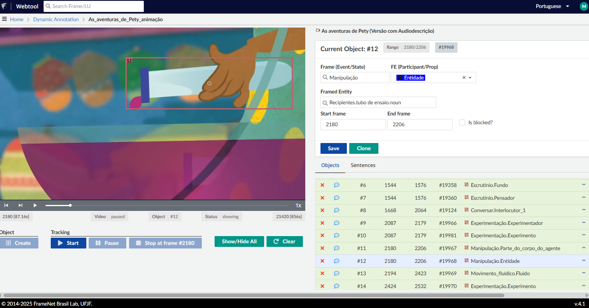
A Figura 17.15, referente ao recorte do vídeo correspondente à sentença da AD apresentada na Figura anterior, ilustra um exemplo de anotação de conteúdo de vídeo. Nela, o anotador criou uma bounding box para delimitar o artefato em cena. Esse artefato foi anotado como EF Entidade no frame Manipulação, que descreve eventos em que um agente manipula uma entidade com um propósito específico. Além da anotação do frame semântico que designa o evento ou estado, o objeto visual também é rotulado quanto ao seu próprio frame. Assim, a entidade delimitada é um tubo de ensaio, que está associado ao frame Recipiente na base da FN.Br. Esse duplo nível de anotação, que especifica tanto o evento quanto a entidade, promove refinamento semântico para o dataset. Essa infraestrutura de anotação possibilita o registro das evocações semânticas nos diversos modos presentes no dataset, oferecendo base para análises intermodais, comparação entre recursos de acessibilidade e avaliação de preservação de sentido entre os modos, como será explorado na próxima seção.
17.5.3 Validação, Aplicações em PLN e Impactos na Tradução Audiovisual Acessível
A primeira versão do dataset Audition18 foi empregada em um experimento de avaliação de similaridade semântica entre modos comunicativos, descrito em (Gamonal et al., 2025). O objetivo foi mensurar, por meio de uma métrica baseada em frames, o grau de convergência semântica entre os diferentes modos anotados no corpus – especialmente o áudio original, a audiodescrição e o conteúdo de vídeo. Trata-se de um exemplo de validação extrínseca, tal como definida no Capítulo Conjunto de dados, dataset e corpus, pois avalia a capacidade do dataset de operar uma tarefa concreta de PLN: a comparação semântica multimodal.
A métrica empregada é uma medida de similaridade semântica baseada em frames, inicialmente explorada pela ReINVenTA em (Viridiano et al., 2024). Seu objetivo é quantificar o alinhamento conceitual entre diferentes modos comunicativos, operando em três etapas principais:
construção de uma matriz de associação que representa relações semânticas entre frames da FrameNet (como Herança, Subframe, Uso e Perspectiva), segundo sua proximidade conceitual;
aplicação de um algoritmo de ativação propagada (spread activation) que dissemina a ativação a partir dos frames anotados, com decaimento conforme a distância entre os nós no grafo semântico;
geração de vetores de ativação para cada instância anotada, nos quais cada dimensão representa um frame e seu valor de ativação acumulado.
A similaridade entre duas instâncias é, então, calculada por meio da similaridade do cosseno entre esses vetores, resultando em um score normalizado entre 0 (nenhuma similaridade) e 1 (similaridade total). A métrica permite, assim, avaliar não apenas a sobreposição direta de frames, mas também a proximidade conceitual entre eles, oferecendo uma medida interpretável da aderência semântica entre os modos.
Os resultados do experimento, sintetizados na Tabela 17.2, compararam os resultados entre áudio original (OA), audiodescrição (AD) e conteúdo de vídeo (CV) a partir de: (i) unidades lexicais (ULs); (ii) frames e elementos de frame (EFs) e (iii) todos os componentes anotados em conjunto (UL + frame + EFs), conforme apresentado na Tabela 17.2.
| pairs | avg | var | stdev | |
|---|---|---|---|---|
| AD LU | 323 | 0.42 | 0.05 | 0.22 |
| AD Frame and FE | 323 | 0.38 | 0.05 | 0.22 |
| AD Full | 323 | 0.49 | 0.05 | 0.21 |
| OA LU | 357 | 0.23 | 0.03 | 0.17 |
| OA Frame and FE | 357 | 0.29 | 0.04 | 0.19 |
| OA Full | 357 | 0.32 | 0.03 | 0.18 |
Fonte: (Gamonal et al., 2025) (no prelo)
As médias de similaridade por cosseno foram superiores entre as representações de AD e VC (máximo de 0.49), em relação às de OA e VC (máximo de 0.32). Esses resultados validam a hipótese de que a audiodescrição desempenha, de fato, a função de mediação semântica entre o conteúdo visual e o público-alvo, e demonstram que o dataset pode ser utilizado para mensurar o nível de similaridade semântico com rigor metodológico.
Essa tendência é reforçada pela distribuição dos valores de similaridade apresentados na Figura 17.16.
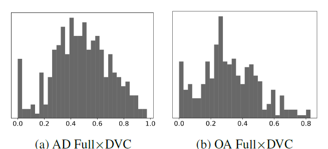
Fonte: (Gamonal et al., 2025) (no prelo)
A AD mantém maior convergência semântica com o vídeo do que o áudio original, como esperado. As comparações que incluem todos os componentes anotados (full) produziram as maiores médias de similaridade, o que reforça a validade da anotação semântica e do próprio design do dataset para finalidades analíticas.
Esses resultados indicam o potencial do Audition para servir a aplicações de PLN no campo da acessibilidade, como:
Geração automática de audiodescrição, com base na associação entre o conteúdo visual segmentado por meio das bounding boxes e suas respectivas evocações semânticas;
Detecção de similaridade semântica entre modos, útil para tarefas de reformulação, sumarização ou avaliação de traduções intersemióticas;
Classificação e extração de informações em ambientes multimodais, como identificação de entidades visuais e suas funções em narrativas audiovisuais;
Avaliação de coerência narrativa entre trilha sonora, falas, imagens e recursos de acessibilidade, especialmente em contextos educativos e culturais.
No campo da Tradução Audiovisual Acessível, o Audition representa um avanço metodológico por permitir a avaliação sistemática da construção de sentido entre modos de tradução intersemiótica. O estudo semântico por meio de frames entre modos – como AD, legenda, closed caption e on-screen text – permite avaliar a eficácia desses recursos e propor melhorias na sua elaboração e padronização.
Além disso, por ser um dataset anotado manualmente e estruturado a partir de uma teoria semântica atrelada aos estudos sociocognitivos da linguagem, o Audition caminha para se tornar um recurso padrão-ouro para o desenvolvimento de tecnologias voltadas à acessibilidade cultural. O alinhamento temporal e semântico entre os modos proporciona base para aplicações em machine learning supervisionado, incluindo o treinamento de modelos multimodais com foco em acessibilidade.
17.6 Considerações finais
Este capítulo buscou apresentar como a aplicação computacional da Semântica de Frames, a FrameNet Brasil, pode contribuir com aplicações transformadoras no campo do Processamento de Linguagem Natural no que tange a causas sociais. Para isso, discutiu-se o papel da anotação computacional em duas frentes – manual e automática – como estratégia central para a construção de sistemas computacionais mais interpretáveis e sensíveis aos contextos de uso, partindo de dois projetos: DataToStopGBV e Audition.
No que concerne ao projeto DataToStopVBG, os resultados evidenciam os benefícios do uso da metodologia da FrameNet para interpretar registros abertos nos sistemas de saúde, auxiliando na identificação de possíveis casos de VBG e possíveis padrões de violência. Ao avançar além das abordagens estatísticas tradicionais, o projeto revelou possíveis correlações entre violência e questões de saúde das vítimas, abrindo caminhos para investigações futuras e intervenções em parceria com profissionais da saúde. Dessa forma, os resultados revelam como a aplicação da FrameNet pode ser uma aliada no enfrentamento da violência.
Neste momento, duas vertentes do projeto estão em andamento. Primeiramente, o estudo mais profundo de possíveis padrões semânticos ligados à violência e a condições de saúde dentro desse contexto. Espera-se que esses dados sejam validados no âmbito da análise da FrameNet, em um trabalho conjunto com profissionais da saúde. Paralelamente a esse estudo, está sendo desenvolvido um painel com dados sobre a subnotificação de violências e padrões semânticos relacionados à violência de gênero, com o objetivo de gerar mapeamentos descritivos sobre tais casos no município de Recife. Por fim, o próximo passo envisionado para esta iniciativa consiste no estudo dos dados com grupos de foco mais específicos, tais como violência autoprovocada e infantil.
No âmbito do projeto Audition, os resultados não foram diferentes, apontando para as vantagens da aplicação da metodologia da FrameNet para tarefas de PLN com foco em acessibilidade. Os resultados da análise apontam que a audiodescrição tem maior convergência semântica com o conteúdo visual do que o áudio original, o que valida os benefícios da anotação multimodal empregada, além de indicar a possibilidade da aplicação para a geração automática de audiodescrição. O Audition, então, se destaca como dataset promissor para tecnologias de tradução audiovisual acessível e referência no campo da acessibilidade cultural.
A próxima etapa central do projeto é a finalização do dataset. Uma versão inicial foi compilada como prova de conceito, permitindo validar o recurso por meio da medida de similaridade semântica. Paralelamente, estamos desenvolvendo um guia semântico para a audiodescrição fílmica, com o objetivo de apresentar as contribuições da tecnologia linguística para a experiência cinematográfica acessível. Essa iniciativa destaca a importância do uso de frames semânticos na estruturação de roteiros de audiodescrição, promovendo aderência ao conteúdo visual e o cuidado com a experiência fílmica do usuário. Espera-se, assim, que o Audition seja amplamente utilizado em tarefas voltadas à promoção da inclusão cultural por meio da tradução audiovisual acessível em português brasileiro.
Além da descrição dos projetos em desenvolvimento na FrameNet Brasil, este capítulo procurou evidenciar o valor da aplicação da Semântica de Frames como fundamento para o desenvolvimento de recursos linguísticos e metodologias voltadas a demandas sociais urgentes. Os estudos de caso apresentados ilustram caminhos distintos de aplicação da anotação semântica que demonstram a amplitude do alcance que a aplicação da FrameNet como recurso de PLN possui. Espera-se, então, que esta discussão contribua para a expansão do escopo de atuação em PLN no português brasileiro, especialmente em iniciativas que tragam benefícios concretos para a população.
Glossário deste capítulo
Semântica de Frames: Modelo teórico proposto por Charles Fillmore, segundo o qual o significado de uma palavra está associado a um esquema conceitual (frame) que organiza papéis semânticos e elementos relacionados a uma cena ou situação.
Frame: Estrutura conceitual que representa uma situação recorrente, com seus participantes, objetos e relações, ativada pelo uso de determinadas palavras ou expressões.
Elemento de Frame (EF): Papel semântico associado a um frame, como Agente, Paciente, Causa etc.
Unidade Lexical (UL): Combinação de um lema e um sentido específico que ativa um frame. Exemplo: em “Eu comprei a maçã da promoção”, “comprar.v” evoca
Comércio_comprar, já em “Os moradores compraram a briga contra o projeto de lei”, o frame evocado éEncontro_hostil.FrameNet Brasil (FN-Br): Projeto que adapta e expande a FrameNet original (em inglês) para o português brasileiro, com adaptações teóricas e metodológicas, além de utilizar ferramentas computacionais próprias.
Relações Frame-a-Frame: Conexões entre frames baseadas em relações, como Subframe, Herança, Perspectiva, Uso etc.
Relações Qualia Ternárias: Conjunto de relações semânticas inspiradas na Teoria do Léxico Gerativo, proposta por James Pustejovsky e utilizada na FN-Br para modelar aspectos internos dos conceitos, como finalidade, composição e origem.
Anotação semântica baseada em frames: Processo de rotulação de unidades lexicais, frames e elementos de frame em textos e outros modos com base na teoria da Semântica de Frames.
Anotação automática: Análise feita por modelos computacionais supervisionados ou não supervisionados, que aplicam rótulos semânticos automaticamente a partir de dados previamente anotados.
Anotação manual: Processo de anotação realizado por linguistas especialistas e/ou estudantes em formação em linguística, seguindo políticas rigorosas e validadas, com foco na interpretação precisa dos dados.
Padrão-ouro (gold standard): Dataset anotado manualmente com alto grau de confiabilidade, usado como referência para treinamento e avaliação de sistemas automáticos.
Webtool: Ferramenta web desenvolvida pela FN-Br para visualização e anotação de dados semânticos.
Lutma: Ferramenta para não especialistas estruturada por meio de tutoriais com passo a passo para criação de frames semânticos.
LOME (Large Ontology Multilingual Extraction): Modelo de rotulação semântica automática que opera com base na Semântica de Frames.
Bounding box: Retângulo utilizado em visão computacional para delimitar objetos ou entidades visuais em imagens ou vídeos.
Similaridade semântica: Medida computacional do grau de proximidade conceitual entre itens lexicais, expressões ou representações com base em sua estrutura semântica.
Spread activation (ativação propagada): Técnica computacional que simula a ativação de nós conectados em uma rede semântica, permitindo capturar relações indiretas entre frames.
Similaridade do cosseno: Métrica de comparação entre dois vetores, usada para mensurar o ângulo entre eles e, assim, sua similaridade conceitual.
Audiodescrição (AD) - fílmica: Recurso de acessibilidade que consiste na narração de informações visuais relevantes para a experiência fílmica de produtos audiovisuais, voltado a pessoas cegas ou com baixa visão.
Tradução intersemiótica: Tradução de significados entre sistemas semióticos diferentes, como de imagem para texto, ou de som para linguagem verbal.
Tradução Audiovisual Acessível: Campo que estuda e desenvolve recursos de tradução que garantam acessibilidade a produtos audiovisuais, como audiodescrição, legendas, closed caption etc.
Violência baseada em gênero (VBG): Qualquer forma de violência direcionada contra indivíduos com base em seu gênero, frequentemente associada a relações desiguais de poder.
DataToStopGBV: Projeto que aplica anotação semântica baseada em frames e PLN a registros do SUS para apoiar o diagnóstico e a prevenção da violência baseada em gênero.
Audition: Dataset multimodal anotado semanticamente, voltado à análise e geração de traduções acessíveis, como audiodescrição, com base na convergência entre modos comunicativos.
Conjunto de relações semânticas inspiradas na Teoria do Léxico Gerativo (Pustejovsky, 1995), utilizadas na FN-Br para modelar aspectos internos dos conceitos, como finalidade, composição e origem. Este tópico será abordado na Subseção As relações qualia ternárias deste capítulo.↩︎
“[...] By the term 'frame' I have in mind any system of concepts related in such a way that to understand any one of them you have to understand the whole structure in which it fits.” [Tradução nossa]↩︎
A ferramenta de consulta da FrameNet original, bem como informações sobre os dados anotados, estão disponíveis em: https://framenet.icsi.berkeley.edu/.↩︎
Seu desenvolvimento foi adotado por diferentes framenets, como as do japonês, sueco e português brasileiro, embora não tenha avançado da mesma maneira no projeto original em inglês. A versão do Construction da FrameNet Brasil pode ser consultada em: https://webtool.frame.net.br/report/cxn.↩︎
De acordo com a metodologia das FrameNets, os nomes dos frames são grafados em fonte
Courier.↩︎A ferramenta de anotação semântica WebTool, bem como os dados anotados, estão disponíveis em: https://webtool.frame.net.br/. O repositório oficial da FrameNet Brasil no Github pode ser acessado em: https://github.com/FrameNetBrasil.↩︎
Seguindo a metodologia das FrameNets, nomes de EFs são apresentados em Versalete.↩︎
Ao longo do texto, as Figuras 17.9 e 17.14 discutem exemplos de anotações de texto corrido.↩︎
As sentenças que aparecem ao longo desta seção para ilustrar os conceitos discutidos advêm de curtas-metragens do Audition e foram anotadas por meio da Webtool.↩︎
Na nomenclatura das FrameNets, antes do ponto é indicado o lema e, após o ponto, a classe gramatical: .n (substantivo, noun), .v (verbo, verb), .a (adjetivo, adjective), entre outros.↩︎
Disponível em: https://lutma.frame.net.br/. Acesso em: 28 jul. 2025.↩︎
Formal – describes the basic category for the item and provides the information that distinguishes an entity within a larger set inside its semantic domain.
Constitutive – expresses a variety of relations concerning the internal constitution of an entity.
Telic – concerns the typical function or purpose of an entity, i.e., what the entity is for.
Agentive – concerns the origin of an entity, its creator, or its coming into being. [Tradução nossa]↩︎
Expressão composta por duas ou mais palavras que juntas possuem sentido próprio, como por exemplo, “pé de moleque”. Expressão que denomina um doce e não o pé de um menino.↩︎
Devido ao conteúdo sensível dos dados utilizados nesta pesquisa, sentenças reais não puderam ser utilizadas. Desta forma, o exemplo usado foi criado para ilustrar o tipo de ocorrência presente no corpus.↩︎
Técnica que calcula a importância de uma palavra em um texto, levando em conta sua frequência no documento e quão rara ela é em todo o conjunto de textos.↩︎
Método que reduz o número de variáveis nos dados, transformando-as em componentes principais e mantendo a maior parte da informação original.↩︎
Por decisão metodológica, optamos por classificar a animação como um gênero cinematográfico distinto da ficção, com base nas reflexões de (Gordeeff, 2023). Além disso, o Audition inclui um exemplar de performance.↩︎
O acesso aos dados da primeira versão do dataset estão disponíveis em: https://huggingface.co/datasets/FrameNetBrasil/Audition.↩︎